m201_agumon
工作包 01 · 順序 1
金鬃腕甲幼貓
貓化 · 方向已制定
原作參照與逐隻改造規則
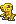
原作姿態參照，並非新畫稿觀察：金黃二足爪獸，短臂與大足
識別特徵：短貓吻、奶油頰胸、連體立耳、簡銀腕環
改動：頭臉、胸腹；腕部
保留：兩足接地、手端、頭轉軸及張嘴方向；原槽位、序列、ticks、native bounds 與相對定位；全動作仍待逐姿態檢查
設計理由：保留 Owner A 金色幼獸身份，採貓科全臉轉化
風險：耳胸斑須適配伏地張嘴
新身份代表姿態通過
檢查狀態
PASS_SETTING_STAGE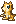
main/cell_000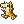
main/cell_008main/cell_023大眼金色貓科幼獸、粉色內耳與兩個緊湊三角耳廓、青綠虹膜與奶油色短口鼻、頰毛、深金虎斑與奶油胸腹、簡單銀色腕環與原有尾部動作構造
原／新姿態比對 · 像素設定
m001_zurumon
工作包 01 · 順序 2
琥珀膠貓
貓化 · 方向已制定
原作參照與逐隻改造規則
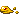
原作姿態參照，並非新畫稿觀察：低矮金色無肢膠體，右側分離液滴
識別特徵：連體軟耳峰、奶油大眼眶、短粉鼻、琥珀側斑
改動：頭頂；面罩
保留：膠體壓扁伸長及原液滴；原槽位、序列、ticks、native bounds 與相對定位；全動作仍待逐姿態檢查
設計理由：保留 Owner B 琥珀膠體，以臉部與膠耳建立新身份
風險：耳峰在壓扁時需貼身
新身份代表姿態通過
檢查狀態
PASS_SETTING_STAGE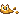
main/cell_000main/cell_023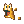
main/cell_060雙尖軟膠耳峰，受壓時一起壓低、兩個奶油眼眶與深綠大瞳、短鼻與奶油雙頰面罩、琥珀金膠體配短赭色側斑、無肢軟體與來源分離液滴
原／新姿態比對 · 像素設定
m226_hagurumon
工作包 01 · 順序 3
徽輪犬面機靈
犬化 · 方向已制定
原作參照與逐隻改造規則
原作姿態參照，並非新畫稿觀察：灰金圓齒輪，紅眼面與側齒
識別特徵：礦金齒緣、紅晶犬眉、短銅鼻板、奶銀頰窗
改動：中央犬面板；齒面
保留：齒輪中心、側齒及旋轉壓缩；原槽位、序列、ticks、native bounds 與相對定位；全動作仍待逐姿態檢查
設計理由：保留 Owner B 礦物徽輪身份，增加明確犬鼻面罩
風險：面板侧轉不可保持正面雙眼
歷史像素稿：新身份方向待重審
檢查狀態
IDENTITY_DESIGN_REQUIRED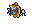
main/cell_000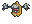
main/cell_008main/cell_023Flush smoke-gray mineral face、Pale angular brow, no protruding crystal、Two red inlay eyes when visible、Charcoal lower wedge、Gold-ochre gear rim
原／新姿態比對 · 像素設定
e000_digitama
工作包 01 · 順序 4
瓷釉貓掌蛋
保留特殊體型／表面身份 · 方向已制定
原作參照與逐隻改造規則
原作姿態參照，並非新畫稿觀察：白灰橢圓殼，底部深灰陰影
識別特徵：象牙瓷釉殼、灰色四點貓掌印、下緣灰釉帶
改動：重新設計殼面主要紋樣與色塊；不新增可動附肢
保留：蛋形、來源共同原點及搖晃位置；既有裂紋、碎片與十二種來源狀態按各自參照處理
設計理由：保留 E000 A 的瓷釉身份，將零散斑點整理成貓掌符號。
風險：圖案跨越裂縫時須使用具名狀態變體；不可由圖案推斷孵化物種。
歷史像素稿：新身份方向待重審
檢查狀態
IDENTITY_DESIGN_REQUIREDmain/cell_000main/cell_001main/cell_002main/cell_004main/cell_005main/cell_006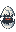
main/cell_007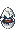
main/cell_008main/cell_009main/cell_010main/cell_011main/cell_012 象牙白殼、四個灰釉斑、下方寬灰釉帶、低噪點瓷釉明暗
原／新姿態比對 · 像素設定
m222_tentomon
工作包 02 · 順序 5
紅甲獅面蟲
獸人化 · 方向已制定
原作參照與逐隻改造規則
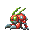
原作姿態參照，並非新畫稿觀察：紅甲多肢昆蟲，綠頭與長觸角
識別特徵：獅鼻額罩、金色複眼框、紅甲片節、淺綠觸角尖
改動：頭甲面；甲片
保留：多肢端點、觸角幅度和甲片開合；原槽位、序列、ticks、native bounds 與相對定位；全動作仍待逐姿態檢查
設計理由：使用獅面甲塑造身份，不新增毛肢
風險：獅鬃只由原甲緣表达
歷史像素稿：新身份方向待重審
檢查狀態
IDENTITY_DESIGN_REQUIRED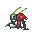
main/cell_000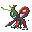
main/cell_011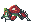
main/cell_023Two matte vermilion shell plates、Broad dark red shell margin、Teal-green forehead、Simple dark eye pocket、Single-color green antenna shafts
原／新姿態比對 · 像素設定
m228_palmon
工作包 02 · 順序 6
莓冠葉掌貓
貓化 · 方向已制定
原作參照與逐隻改造規則
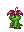
原作姿態參照，並非新畫稿觀察：綠色直立植物，頂部紫粉花冠
識別特徵：葉尖耳面罩、奶油貓頰、莓色短鼻、深綠根足紋
改動：臉葉；花冠表面
保留：花冠中心、枝手端与根足；原槽位、序列、ticks、native bounds 與相對定位；全動作仍待逐姿態檢查
設計理由：花冠貓臉形成新身份而保留植物關節
風險：貓頰必須隨葉面折疊
歷史像素稿：新身份方向待重審
檢查狀態
IDENTITY_DESIGN_REQUIRED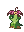
main/cell_000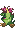
main/cell_007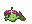
main/cell_020深翠葉面罩圍住短眼縫；鼻樑留嫩葉亮面、淡綠頰塊接至下巴，臉部明暗以大塊面表示、花冠改為深莓紅底與淺粉單向花瓣面、胸口一片淺綠葉盾，根足使用寬褐色帶
原／新姿態比對 · 像素設定
m352_peckmon
工作包 02 · 順序 7
赤冠犬眉疾鳥
犬化 · 方向已制定
原作參照與逐隻改造規則
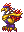
原作姿態參照，並非新畫稿觀察：長喙地行鳥，紫頸，紅冠尾羽，粗鳥足
識別特徵：赭金犬眉斑、奶油喙根面罩、深紫胸羽、赤紅分叉冠
改動：頭眼、喙根、胸羽與護腿
保留：長喙末端、前傾頸軸、鳥足
設計理由：犬面語言放在喙根，保持原鳥腿步態
風險：既有設定須按新身份重開，不能只加鼻點
歷史像素稿：新身份方向待重審
檢查狀態
IDENTITY_DESIGN_REQUIRED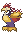
main/cell_000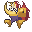
main/cell_007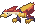
main/cell_019寬紅冠只有一道暖紅亮面；保留冠尖原本方向、奶油色頰楔連接淺色頸面，深色眼縫與頰色形成辨識、金肩使用完整大面及下緣陰影，移除金屬碎反光、低彩紫身與腿作為穩定底色；喙與趾端維持暖金
原／新姿態比對 · 像素設定
m431_whamon
工作包 02 · 順序 8
灰吻海犬
犬化 · 方向已制定
原作參照與逐隻改造規則
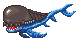
原作姿態參照，並非新畫稿觀察：橫向巨型水生身體，大頭口部、藍色鰭尾
識別特徵：短犬吻式鼻面分區、奶油眉斑、海灰背與白腹、大鰭藍黑耳形條紋
改動：頭臉辨識：短犬吻式鼻面分區；身體材質與局部圖樣：奶油眉斑；海灰背與白腹；大鰭藍黑耳形條紋
保留：嘴縫、所有鰭尾端與漂浮原點；只以目前站姿見證鎖定可見構造；全部序列動態位置尚待逐姿態驗證
設計理由：以「灰吻海犬」重設身份；依可見的橫向巨型水生身體，大頭口部、藍色鰭尾選擇CANINE，以臉部及成組材質區塊建立差異，保持既有支撐和延伸構造。
風險：不能新增會獨立擺動的犬耳或腿
歷史像素稿：新身份方向待重審
檢查狀態
IDENTITY_DESIGN_REQUIREDmain/cell_000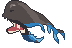
main/cell_008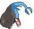
main/cell_012 寬額改成霧面深灰褐，不保留原本斑駁亮點、臉側短灰弧與深色楔形面部記號形成辨識，位置逐姿態重畫、腹部、鰭及尾部以深藍、中藍、淺藍三大片面表示、腹鰭內只用三段寬色帶，不另增解剖褶皺
原／新姿態比對 · 像素設定
e001_digitama
工作包 03 · 順序 9
赤紋幼犬蛋
保留特殊體型／表面身份 · 方向已制定
原作參照與逐隻改造規則
原作姿態參照，並非新畫稿觀察：白殼紅色橫向碎紋
識別特徵：暖白底色、赭紅犬鼻盾形印、紅色斷續環帶
改動：重新設計殼面主要紋樣與色塊；不新增可動附肢
保留：蛋形、來源共同原點及搖晃位置；既有裂紋、碎片與十二種來源狀態按各自參照處理
設計理由：沿原紅白對比建立犬系鼻印，符號置於完整殼面。
風險：圖案跨越裂縫時須使用具名狀態變體；不可由圖案推斷孵化物種。
歷史像素稿：新身份方向待重審
檢查狀態
IDENTITY_DESIGN_REQUIREDmain/cell_000main/cell_001main/cell_002main/cell_004main/cell_005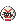
main/cell_006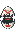
main/cell_007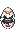
main/cell_008main/cell_009main/cell_010main/cell_011main/cell_012 暖白不透明瓷殼、兩道朱紅V形折紋、下殼短紅條、冷灰側緣
原／新姿態比對 · 像素設定
e002_digitama
工作包 03 · 順序 10
苔金龍鱗蛋
保留特殊體型／表面身份 · 方向已制定
原作參照與逐隻改造規則
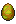
原作姿態參照，並非新畫稿觀察：金黃綠色殼面，有橫向暗紋
識別特徵：金棕殼底、橄欖綠菱鱗、深金下緣
改動：重新設計殼面主要紋樣與色塊；不新增可動附肢
保留：蛋形、來源共同原點及搖晃位置；既有裂紋、碎片與十二種來源狀態按各自參照處理
設計理由：用少量大菱鱗表達龍系，維持簡單色塊與裂縫可讀性。
風險：圖案跨越裂縫時須使用具名狀態變體；不可由圖案推斷孵化物種。
歷史像素稿：新身份方向待重審
檢查狀態
IDENTITY_DESIGN_REQUIREDmain/cell_000main/cell_001main/cell_002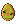
main/cell_004main/cell_005main/cell_006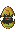
main/cell_007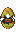
main/cell_008main/cell_009main/cell_010main/cell_011main/cell_012 赭黃不透明殼、橄欖綠中空菱章、底部寬橄欖帶、低噪點銅褐側影
原／新姿態比對 · 像素設定
e003_digitama
工作包 03 · 順序 11
粉晶大眼紋蛋
保留特殊體型／表面身份 · 方向已制定
原作參照與逐隻改造規則
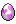
原作姿態參照，並非新畫稿觀察：淡紫粉色殼面，亮斑集中中段
識別特徵：粉紫珠光殼、兩枚奶油眼形紋、深紫下緣
改動：重新設計殼面主要紋樣與色塊；不新增可動附肢
保留：蛋形、來源共同原點及搖晃位置；既有裂紋、碎片與十二種來源狀態按各自參照處理
設計理由：大眼是殼面裝飾，不新增眨眼動畫或孵化關係。
風險：圖案跨越裂縫時須使用具名狀態變體；不可由圖案推斷孵化物種。
歷史像素稿：新身份方向待重審
檢查狀態
IDENTITY_DESIGN_REQUIREDmain/cell_000main/cell_001main/cell_002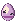
main/cell_004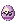
main/cell_005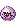
main/cell_006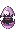
main/cell_007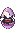
main/cell_008main/cell_009main/cell_010main/cell_011main/cell_012 紫粉不透明釉面、一枚偏左珍珠直瓣、下殼深梅色帶、柔和淡粉側光
原／新姿態比對 · 像素設定
e004_digitama
工作包 03 · 順序 12
嫩葉狐紋蛋
保留特殊體型／表面身份 · 方向已制定
原作參照與逐隻改造規則
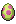
原作姿態參照，並非新畫稿觀察：綠色殼與粉色中央紋樣
識別特徵：嫩綠殼底、粉色尖頰面罩印、葉形斷帶
改動：重新設計殼面主要紋樣與色塊；不新增可動附肢
保留：蛋形、來源共同原點及搖晃位置；既有裂紋、碎片與十二種來源狀態按各自參照處理
設計理由：以尖頰面罩形成狐犬語彙；外殼仍是原蛋形。
風險：圖案跨越裂縫時須使用具名狀態變體；不可由圖案推斷孵化物種。
歷史像素稿：新身份方向待重審
檢查狀態
IDENTITY_DESIGN_REQUIREDmain/cell_000main/cell_001main/cell_002main/cell_004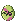
main/cell_005main/cell_006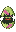
main/cell_007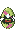
main/cell_008main/cell_009main/cell_010main/cell_011main/cell_012 嫩綠不透明殼、一條玫紅階梯斜帶、底部短玫紅續帶、橄欖綠邊影
原／新姿態比對 · 像素設定
e005_digitama
工作包 04 · 順序 13
薄荷貓斑蛋
保留特殊體型／表面身份 · 方向已制定
原作參照與逐隻改造規則
原作姿態參照，並非新畫稿觀察：白綠色殼面，斜向綠色帶
識別特徵：奶白底色、薄荷雙耳符號、深綠短斑帶
改動：重新設計殼面主要紋樣與色塊；不新增可動附肢
保留：蛋形、來源共同原點及搖晃位置；既有裂紋、碎片與十二種來源狀態按各自參照處理
設計理由：貓耳只畫成殼上的平面圖案，不給蛋增加實體耳朵。
風險：圖案跨越裂縫時須使用具名狀態變體；不可由圖案推斷孵化物種。
歷史像素稿：新身份方向待重審
檢查狀態
IDENTITY_DESIGN_REQUIRED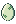
main/cell_000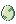
main/cell_001main/cell_002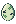
main/cell_004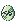
main/cell_005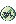
main/cell_006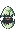
main/cell_007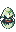
main/cell_008main/cell_009main/cell_010main/cell_011main/cell_012青芽嵌葉蛋、淡玉綠殼、上下相對的兩枚實心階梯葉印、深綠邊與單側奶油亮面。、Fixed binary-alpha source silhouette、Existing split-shell/effect sequence preserved
原／新姿態比對 · 像素設定
e006_digitama
工作包 04 · 順序 14
暮紫獸爪蛋
保留特殊體型／表面身份 · 方向已制定
原作參照與逐隻改造規則
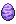
原作姿態參照，並非新畫稿觀察：紫色殼面，深紫水平環紋
識別特徵：霧紫殼底、淡金三趾爪印、深紫間斷環帶
改動：重新設計殼面主要紋樣與色塊；不新增可動附肢
保留：蛋形、來源共同原點及搖晃位置；既有裂紋、碎片與十二種來源狀態按各自參照處理
設計理由：獸爪符號用大像素色塊，不在碎殼上強行補完整圖案。
風險：圖案跨越裂縫時須使用具名狀態變體；不可由圖案推斷孵化物種。
歷史像素稿：新身份方向待重審
檢查狀態
IDENTITY_DESIGN_REQUIREDmain/cell_000main/cell_001main/cell_002main/cell_004main/cell_005main/cell_006main/cell_007main/cell_008main/cell_009main/cell_010main/cell_011main/cell_012
月印紫陶蛋、霧紫陶面、單枚淡金菱形印與兩個深紫小定位印，無環狀橫條。、Fixed binary-alpha source silhouette、Existing split-shell/effect sequence preserved
原／新姿態比對 · 像素設定
e007_digitama
工作包 04 · 順序 15
暖金龍角紋蛋
保留特殊體型／表面身份 · 方向已制定
原作參照與逐隻改造規則
原作姿態參照，並非新畫稿觀察：奶油黃殼面，金色不連續紋樣
識別特徵：奶油殼底、暖金雙角弧印、琥珀小斑
改動：重新設計殼面主要紋樣與色塊；不新增可動附肢
保留：蛋形、來源共同原點及搖晃位置；既有裂紋、碎片與十二種來源狀態按各自參照處理
設計理由：雙角是平面符號，保留蛋形与原裂開順序。
風險：圖案跨越裂縫時須使用具名狀態變體；不可由圖案推斷孵化物種。
歷史像素稿：新身份方向待重審
檢查狀態
IDENTITY_DESIGN_REQUIREDmain/cell_000main/cell_001main/cell_002main/cell_004main/cell_005main/cell_006main/cell_007main/cell_008main/cell_009main/cell_010main/cell_011main/cell_012
日弧琥珀蛋、琥珀陶面、偏左奶油階梯日弧與右方三個赭紅短印，無橫向腰帶。、Fixed binary-alpha source silhouette、Existing split-shell/effect sequence preserved
原／新姿態比對 · 像素設定
m002_choromon
工作包 04 · 順序 16
瓷銅巡犬
犬化 · 方向已制定
原作參照與逐隻改造規則
原作姿態參照，並非新畫稿觀察：灰銀小機械體，兩支上伸細構件與短尾
識別特徵：折角犬耳天線、銅鼻面板、瓷白眼框、短鉚釘頰
改動：機械頭殼；前臉
保留：天線根部、短尾與機械本體位置；原槽位、序列、ticks、native bounds 與相對定位；全動作仍待逐姿態檢查
設計理由：短犬吻可嵌入前面板，不增加新的活動構件
風險：細天線易在深底消失
歷史像素稿：新身份方向待重審
檢查狀態
IDENTITY_DESIGN_REQUIREDmain/cell_000main/cell_002main/cell_010
瓷白楔形額面，取消零碎金屬反光、雙青鏡凹槽取代來源正面鮮紅色區；僅出現在來源可見面、完整銅色邊圈及銅色長尾構件、側面一組雙像素寬銅嵌條，與正面青鏡作區分
原／新姿態比對 · 像素設定
m003_nyokimon
工作包 05 · 順序 17
薄荷葉耳貓種
貓化 · 方向已制定
原作參照與逐隻改造規則
原作姿態參照，並非新畫稿觀察：綠色雙葉下方是白邊暗色小圓核
識別特徵：雙葉耳色區、奶油雙眼、桃色三角鼻、翠綠種殼
改動：葉片表面；種核臉
保留：葉根、圓核位置與懸浮關係；原槽位、序列、ticks、native bounds 與相對定位；全動作仍待逐姿態檢查
設計理由：已有雙葉可承載貓耳語言，保持植物結構
風險：葉片翻轉時耳標記需一起翻
新身份畫稿，代表姿態待補齊或複審
檢查狀態
IDENTITY_REPAIR_REQUIREDmain/cell_000
雙葉耳色區、奶油雙眼、桃色三角鼻、翠綠種殼
原／新姿態比對 · 像素設定
m004_bubbmon
工作包 05 · 順序 18
青檸泡泡幼靈
大眼化 · 方向已制定
原作參照與逐隻改造規則
原作姿態參照，並非新畫稿觀察：綠色軟團，左側口部突出，上方兩泡
識別特徵：成對水亮大眼、奶油鼻口罩、青檸凝膠層、泡內小高光
改動：軟團前臉；泡色塊
保留：突出嘴位、底部軟攤和獨立氣泡；原槽位、序列、ticks、native bounds 與相對定位；全動作仍待逐姿態檢查
設計理由：圓眼面罩比硬加耳朵適合流體形變
風險：泡泡不能增減或變成耳朵
新身份畫稿，代表姿態待補齊或複審
檢查狀態
POSE_SAMPLING_INCOMPLETEmain/cell_000
成對水亮大眼、奶油鼻口罩、青檸凝膠層、泡內小高光
原／新姿態比對 · 像素設定
m005_pitchmon
工作包 05 · 順序 19
水滴幼龍
龍人化 · 方向已制定
原作參照與逐隻改造規則
原作姿態參照，並非新畫稿觀察：青藍細長漂浮體，頭頂短枝狀輪廓
識別特徵：短雙角水冠、深藍大瞳、奶油短吻、淺青腹線
改動：頭冠；臉腹
保留：細長身軸與上下小突起；原槽位、序列、ticks、native bounds 與相對定位；全動作仍待逐姿態檢查
設計理由：用龍角形色區建立龍幼體而維持漂浮軟身
風險：狹小臉部不能塞入長吻
新身份畫稿，代表姿態待補齊或複審
檢查狀態
IDENTITY_REPAIR_REQUIREDmain/cell_000
短雙角水冠、深藍大瞳、奶油短吻、淺青腹線
原／新姿態比對 · 像素設定
m006_punimon
工作包 05 · 順序 20
莓果團犬
犬化 · 方向已制定
原作參照與逐隻改造規則
原作姿態參照，並非新畫稿觀察：红色圓團，頂部有短突起
識別特徵：短圓耳斑、奶油雙眉、深棗鼻、櫻紅團身
改動：團面；上緣
保留：圓團接地和彈壓外形；原槽位、序列、ticks、native bounds 與相對定位；全動作仍待逐姿態檢查
設計理由：圓犬臉讓紅團有明確表情而不用增加腿
風險：鼻口只能佔少量像素
已排入全員製作，尚未畫出新外型
m007_botamon
工作包 06 · 順序 21
煤絨夜貓
貓化 · 方向已制定
原作參照與逐隻改造規則
原作姿態參照，並非新畫稿觀察：黑灰絨球，雙頂尖及小黃面點
識別特徵：兩個尖耳面、金色大眼、灰色短頰、煤黑圓毛團
改動：雙尖；中央臉
保留：原圓球重心和頂尖根部；原槽位、序列、ticks、native bounds 與相對定位；全動作仍待逐姿態檢查
設計理由：現有双尖結構可直接發展貓科輪廓
風險：深灰輪廓需與暗地分離
已排入全員製作，尚未畫出新外型
m008_poyomon
工作包 06 · 順序 22
冰露圓眼靈
大眼化 · 方向已制定
原作參照與逐隻改造規則
原作姿態參照，並非新畫稿觀察：淡青白色水滴團，底部短突起
識別特徵：湖藍圓瞳、奶油口鼻點、淡青滴形罩、底緣藍帶
改動：滴形面；色帶
保留：水滴上端和底部支撐；原槽位、序列、ticks、native bounds 與相對定位；全動作仍待逐姿態檢查
設計理由：清楚雙眼足以重建水滴幼體身份
風險：白臉在亮地上需外框
已排入全員製作，尚未畫出新外型
m009_mokumon
工作包 06 · 順序 23
燼煙小獅
獸人化 · 方向已制定
原作參照與逐隻改造規則
原作姿態參照，並非新畫稿觀察：黑灰煙團與細下垂煙尾，頂部火光
識別特徵：燼金眉眼、圓獅鼻、煙圈頰鬃、火頂亮點
改動：煙團臉；頰圈
保留：煙尾連接與火光所在槽位；原槽位、序列、ticks、native bounds 與相對定位；全動作仍待逐姿態檢查
設計理由：用煙圈表達獅鬃可保留非實體身形
風險：鬃毛不可形成新擺動
已排入全員製作，尚未畫出新外型
m010_yukimibotamon
工作包 06 · 順序 24
雪糰尖耳犬
犬化 · 方向已制定
原作參照與逐隻改造規則
原作姿態參照，並非新畫稿觀察：白色圓團，頂部兩個小尖
識別特徵：霜藍眼框、灰藍大鼻、短白立耳、奶油頰底
改動：團面；耳尖色塊
保留：圓團壓縮與雙尖位置；原槽位、序列、ticks、native bounds 與相對定位；全動作仍待逐姿態檢查
設計理由：犬鼻及立耳區別於其他白色軟團
風險：白耳不得融入白背景
已排入全員製作，尚未畫出新外型
m011_yuramon
工作包 07 · 順序 25
奶霜絲絨靈
大眼化 · 方向已制定
原作參照與逐隻改造規則
原作姿態參照，並非新畫稿觀察：米白環狀軟體，頂部紫色長絲
識別特徵：紫葡萄大瞳、奶油環頰、雙色觸絲、淺棕底沿
改動：環面；觸絲配色
保留：長絲根部、環狀身段；原槽位、序列、ticks、native bounds 與相對定位；全動作仍待逐姿態檢查
設計理由：將眼置於環中央可避免另長頭部
風險：長絲可能遮住眼睛
已排入全員製作，尚未畫出新外型
m012_petimon
工作包 07 · 順序 26
碧潮短吻龍
龍人化 · 方向已制定
原作參照與逐隻改造規則
原作姿態參照，並非新畫稿觀察：青綠橫向小體，背部紫點及向右尾形
識別特徵：墨青龍眼、淡金短吻、紫色背冠、青玉腹面
改動：前臉；背冠
保留：橫向體軸和尾端；原槽位、序列、ticks、native bounds 與相對定位；全動作仍待逐姿態檢查
設計理由：現有流線身適合水棲幼龍
風險：短吻不得延長作用端
已排入全員製作，尚未畫出新外型
m101_caprimon
工作包 07 · 順序 27
鈷甲耳貓
貓化 · 方向已制定
原作參照與逐隻改造規則
原作姿態參照，並非新畫稿觀察：灰銀頭盔狀圓體，雙尖角與藍尾
識別特徵：三角金屬耳殼、琥珀貓眼、銀色短鼻板、鈷藍尾環
改動：頭殼；面板
保留：雙尖根點和尾形連接；原槽位、序列、ticks、native bounds 與相對定位；全動作仍待逐姿態檢查
設計理由：機械貓臉與原金屬輪廓相容
風險：不能把金屬角當可擺軟耳
已排入全員製作，尚未畫出新外型
m102_koromon
工作包 07 · 順序 28
桃桃垂耳犬
犬化 · 方向已制定
原作參照與逐隻改造規則
原作姿態參照，並非新畫稿觀察：粉紅圓體，長雙觸帶向上橫伸
識別特徵：桃色長垂耳帶、奶白吻罩、巧克力犬鼻、粉團雙頰
改動：觸帶表面；臉
保留：雙帶根部與全部原擺幅；原槽位、序列、ticks、native bounds 與相對定位；全動作仍待逐姿態檢查
設計理由：沿既有長帶設計垂耳，不另加構件
風險：帶尾翻折容易變成額外耳朵
已排入全員製作，尚未畫出新外型
m103_tanemon
工作包 08 · 順序 29
葉冠種子犬
犬化 · 方向已制定
原作參照與逐隻改造規則
原作姿態參照，並非新畫稿觀察：黃綠種子體，頂部兩長葉
識別特徵：折葉犬耳紋、豆棕鼻、奶油眉斑、嫩綠種殼
改動：葉面；種子臉
保留：兩葉和種核中心；原槽位、序列、ticks、native bounds 與相對定位；全動作仍待逐姿態檢查
設計理由：用犬眉與鼻區分其他葉貓型
風險：眼眉需避開葉柄遮擋
已排入全員製作，尚未畫出新外型
m104_tunomon
工作包 08 · 順序 30
蜜角龍糰
龍人化 · 方向已制定
原作參照與逐隻改造規則
原作姿態參照，並非新畫稿觀察：橙白圓體，頂端長單角
識別特徵：深藍角環、焦糖大眼、乳白短吻、橙金外殼
改動：臉；角材質
保留：單角根部與圓體彈動；原槽位、序列、ticks、native bounds 與相對定位；全動作仍待逐姿態檢查
設計理由：單角龍身份沿用來源主要結構
風險：不能增第二角改变單角輪廓
已排入全員製作，尚未畫出新外型
m105_tokomon
工作包 08 · 順序 31
奶油長耳幼犬
犬化 · 方向已制定
原作參照與逐隻改造規則
原作姿態參照，並非新畫稿觀察：米白小團，雙長耳豎起與短足
識別特徵：奶茶耳尖、圓黑犬鼻、杏色大眼、圓短掌斑
改動：耳內；鼻口
保留：長耳高度、短足接地；原槽位、序列、ticks、native bounds 與相對定位；全動作仍待逐姿態檢查
設計理由：借現有長耳設計柔軟犬耳
風險：大眼不能擠掉張嘴區
已排入全員製作，尚未畫出新外型
m106_nyaromon
工作包 08 · 順序 32
金鈴尾貓
貓化 · 方向已制定
原作參照與逐隻改造規則
原作姿態參照，並非新畫稿觀察：黃球身，長細尾向右伸
識別特徵：虎斑額記、雙綠貓眼、奶油短吻、尾尖紫環
改動：球臉；尾斑
保留：尾根、尾端和球體定位；原槽位、序列、ticks、native bounds 與相對定位；全動作仍待逐姿態檢查
設計理由：原球尾構造足以發展玩偶貓
風險：尾斑跨姿態可能閃動
已排入全員製作，尚未畫出新外型
m107_pagumon
工作包 09 · 順序 33
紫芋飛耳犬
犬化 · 方向已制定
原作參照與逐隻改造規則
原作姿態參照，並非新畫稿觀察：紫色圓身，雙長耳向兩側展
識別特徵：奶白犬眉、莓鼻短吻、紫灰耳內、圓眼黑邊
改動：展耳；短臉
保留：兩耳根、耳梢和圓身；原槽位、序列、ticks、native bounds 與相對定位；全動作仍待逐姿態檢查
設計理由：飛耳犬可利用既有耳動作
風險：不能為表情縮短耳幅
已排入全員製作，尚未畫出新外型
m108_pyokomon
工作包 09 · 順序 34
花帽粉貓
貓化 · 方向已制定
原作參照與逐隻改造規則
原作姿態參照，並非新畫稿觀察：粉紅短身，上方藍花冠與中央紅蕊
識別特徵：貓形奶油面罩、花瓣耳紋、莓色短鼻、粉桃腹塊
改動：臉；花瓣表面
保留：冠蕊中心、花冠寬幅及短身；原槽位、序列、ticks、native bounds 與相對定位；全動作仍待逐姿態檢查
設計理由：花帽保留植物特色，臉部貓化清楚
風險：花瓣耳只是色紋不可另擺
已排入全員製作，尚未畫出新外型
m109_pukamon
工作包 09 · 順序 35
灰潮尾犬
犬化 · 方向已制定
原作參照與逐隻改造規則
原作姿態參照，並非新畫稿觀察：灰色立起小體，有橘冠與長尾
識別特徵：海灰犬吻、橘紅短冠、奶白眉頰、深灰尾尖
改動：頭臉；腹紋
保留：原後肢、前突吻和尾弧；原槽位、序列、ticks、native bounds 與相對定位；全動作仍待逐姿態檢查
設計理由：長尾短身可做水棲犬系幼獸
風險：面罩需適配側臉
已排入全員製作，尚未畫出新外型
m110_petimemramon
工作包 09 · 順序 36
焰鬚幼龍
龍人化 · 方向已制定
原作參照與逐隻改造規則
原作姿態參照，並非新畫稿觀察：橘色火焰團，多條火舌向右
識別特徵：深藍龍瞳、奶金短吻、赤紅火鬚根、橘黃焰身
改動：火焰中央臉
保留：火舌末端和燃燒圖格；原槽位、序列、ticks、native bounds 與相對定位；全動作仍待逐姿態檢查
設計理由：用龍臉融入原火團避免新增骨架
風險：火舌不可解讀成新可動鬍鬚
已排入全員製作，尚未畫出新外型
m111_mochimon
工作包 10 · 順序 37
桃糯大眼靈
大眼化 · 方向已制定
原作參照與逐隻改造規則
原作姿態參照，並非新畫稿觀察：粉紅立起軟團，前伸小突起
識別特徵：兩顆莓色大瞳、奶白額罩、桃紅短嘴、腳底粉帶
改動：軟團臉腹
保留：軟體伸壓和原小突起；原槽位、序列、ticks、native bounds 與相對定位；全動作仍待逐姿態檢查
設計理由：大眼讓柔軟表情成为主要識別
風險：眼睛隨壓扁不能浮出輪廓
已排入全員製作，尚未畫出新外型
m112_bebydomon
工作包 10 · 順序 38
青瓷幼龍人
龍人化 · 方向已制定
原作參照與逐隻改造規則
原作姿態參照，並非新畫稿觀察：青色立起細龍體，尖吻與長尾
識別特徵：珊瑚小角、圓潤龍眼、奶瓷腹甲、短腮線
改動：頭臉；腹甲
保留：尖吻端、尾弧和站立結構；原槽位、序列、ticks、native bounds 與相對定位；全動作仍待逐姿態檢查
設計理由：已有龍形可重設成親和龍人
風險：大眼化不得縮動吻端
已排入全員製作，尚未畫出新外型
m113_sunmon
工作包 10 · 順序 39
日焰耳貓
貓化 · 方向已制定
原作參照與逐隻改造規則
原作姿態參照，並非新畫稿觀察：橘紅低圓身，頂部長火苗
識別特徵：雙焰耳色區、琥珀瞳、奶金貓鼻罩、赤銅底環
改動：圓臉和焰面
保留：長焰根部和低身高度；原槽位、序列、ticks、native bounds 與相對定位；全動作仍待逐姿態檢查
設計理由：火焰面罩可提供貓身份而不加新火舌
風險：雙耳僅嵌在既有焰形內
已排入全員製作，尚未畫出新外型
m114_moonmon
工作包 10 · 順序 40
月滴夢靈
大眼化 · 方向已制定
原作參照與逐隻改造規則
原作姿態參照，並非新畫稿觀察：淡紫圓身，頂部細長彎垂構件
識別特徵：月白大眼框、深紫星瞳、淡藍鼻點、紫灰滴帽
改動：圓面和長滴帽
保留：垂構件根點与彎幅；原槽位、序列、ticks、native bounds 與相對定位；全動作仍待逐姿態檢查
設計理由：大眼夢靈保留單一長滴帽的辨識度
風險：不能新增流動星點動作
已排入全員製作，尚未畫出新外型
m202_armadimon
工作包 11 · 順序 41
金背獾甲獸
獸人化 · 方向已制定
原作參照與逐隻改造規則
原作姿態參照，並非新畫稿觀察：黃甲四足獸，背上大節甲
識別特徵：黑白獾面罩、琥珀甲節、厚圓掌、短銅鼻
改動：頭面；甲節紋
保留：四足結構、背甲高度與尾端；原槽位、序列、ticks、native bounds 與相對定位；全動作仍待逐姿態檢查
設計理由：獾的低伏重身適合甲獸構造
風險：側面面罩不可破壞眼位
已排入全員製作，尚未畫出新外型
m203_elecmon
工作包 11 · 順序 42
赤電尾簇貓
貓化 · 方向已制定
原作參照與逐隻改造規則
原作姿態參照，並非新畫稿觀察：紅色低伏多尾輪廓，四肢外伸
識別特徵：尖耳額甲、深靛貓眼、奶白鼻頰、紅藍尾簇斑
改動：头臉；尾簇表面
保留：多尾数量、分叉端及四肢接地；原槽位、序列、ticks、native bounds 與相對定位；全動作仍待逐姿態檢查
設計理由：猫科臉與靈活低伏身可相容
風險：多尾交疊最易身份漂移
已排入全員製作，尚未畫出新外型
m204_otamamon
工作包 11 · 順序 43
泡腹圓眼幼獸
大眼化 · 方向已制定
原作參照與逐隻改造規則
原作姿態參照，並非新畫稿觀察：藍紫圓腹，尾巴高翹與細小足
識別特徵：冰白大眼罩、深藍圓瞳、珊瑚短嘴、淡紫腹圓
改動：圓頭腹面
保留：高翹尾、細足與腹部體積；原槽位、序列、ticks、native bounds 與相對定位；全動作仍待逐姿態檢查
設計理由：以大眼建立新身份而維持蝌蚪式體型
風險：圓眼不能蓋住口部開合
已排入全員製作，尚未畫出新外型
m205_gaomon
工作包 11 · 順序 44
靛藍拳套幼犬
犬化 · 方向已制定
原作參照與逐隻改造規則
原作姿態參照，並非新畫稿觀察：藍色二足犬型，紅額帶與手套
識別特徵：奶油犬眉、寬圓鼻、紅額帶結、白藍拳套分區
改動：臉；手套甲面
保留：二足姿態、拳端與額帶根部；原槽位、序列、ticks、native bounds 與相對定位；全動作仍待逐姿態檢查
設計理由：保留犬型動作，重設犬種與臉部語言
風險：額帶飄動只沿來源軌跡
已排入全員製作，尚未畫出新外型
m206_gazimon
工作包 12 · 順序 45
霜紫長耳狼童
犬化 · 方向已制定
原作參照與逐隻改造規則
原作姿態參照，並非新畫稿觀察：淡紫大耳二足獸，長臂爪與尾
識別特徵：墨藍犬鼻、冰灰眉斑、紫耳內面、白胸菱毛
改動：大耳；臉胸
保留：大耳展幅、長爪端和尾；原槽位、序列、ticks、native bounds 與相對定位；全動作仍待逐姿態檢查
設計理由：長耳狼童適合原瘦長肢體
風險：长吻不得再向外延伸
已排入全員製作，尚未畫出新外型
m208_gabumon
工作包 12 · 順序 46
雪披獅角童
獸人化 · 方向已制定
原作參照與逐隻改造規則
原作姿態參照，並非新畫稿觀察：藍白披皮二足獸，單角與紫手足
識別特徵：獅形奶油吻、銅額角、藍斑披肩、厚紫掌垫
改動：臉及披肩面紋
保留：單角、披皮邊與掌端；原槽位、序列、ticks、native bounds 與相對定位；全動作仍待逐姿態檢查
設計理由：獅面與已有披肩能建立獸人輪廓
風險：披肩不能重解為新翅膀
已排入全員製作，尚未畫出新外型
m209_kamemon
工作包 12 · 順序 47
苔帽龜犬
犬化 · 方向已制定
原作參照與逐隻改造規則
原作姿態參照，並非新畫稿觀察：綠色短肢獸，藍帽狀殼與圓腹
識別特徵：圓犬鼻、奶白眉、苔綠龜腹片、藍殼帽沿
改動：臉；腹片
保留：帽殼高度、短足和腹圓；原槽位、序列、ticks、native bounds 與相對定位；全動作仍待逐姿態檢查
設計理由：在龜體裡放犬臉可保留全部短肢動作
風險：犬耳只作帽面圖形
已排入全員製作，尚未畫出新外型
m210_gizamon
工作包 12 · 順序 48
銅刺地龍
龍人化 · 方向已制定
原作參照與逐隻改造規則
原作姿態參照，並非新畫稿觀察：橘色低伏爪獸，背上多灰刺
識別特徵：玉綠龍眼、短寬龍吻、銅紅頰甲、灰岩背刺
改動：臉；背刺表面
保留：背刺端、寬爪足和低身；原槽位、序列、ticks、native bounds 與相對定位；全動作仍待逐姿態檢查
設計理由：地龍身份直接利用背刺爪足構造
風險：不可增高背刺影響遮擋
已排入全員製作，尚未畫出新外型
m211_candmon
工作包 13 · 順序 49
燭光大眼靈
大眼化 · 方向已制定
原作參照與逐隻改造規則
原作姿態參照，並非新畫稿觀察：白綠蠟燭狀身，頂火與外伸短臂
識別特徵：煤黑圓瞳、奶黃眉滴、橘芯火冠、薄荷蠟裙
改動：蠟身臉与滴纹
保留：頂火位置、燭身高度及手端；原槽位、序列、ticks、native bounds 與相對定位；全動作仍待逐姿態檢查
設計理由：大眼可在柱狀面建立清楚身份
風險：不能把蠟滴當獨立飾品
已排入全員製作，尚未畫出新外型
m214_kunemon
工作包 13 · 順序 50
麥穗觸角犬蟲
犬化 · 方向已制定
原作參照與逐隻改造規則
原作姿態參照，並非新畫稿觀察：黃色節蟲，大頭長觸角與多足
識別特徵：棕犬鼻面、奶油雙眉、麥金節甲、深藍尾節
改動：頭面；節甲
保留：觸角端、多足數量及節體；原槽位、序列、ticks、native bounds 與相對定位；全動作仍待逐姿態檢查
設計理由：犬臉嵌入蟲頭可改身份而保留節蟲動作
風險：犬耳只能是頭甲色區
已排入全員製作，尚未畫出新外型
m217_gottumon
工作包 13 · 順序 51
石頰熊童
獸人化 · 方向已制定
原作參照與逐隻改造規則
原作姿態參照，並非新畫稿觀察：灰色岩塊二足體，寬臂與短足
識別特徵：圓熊面板、琥珀眼孔、灰白胸岩、厚石掌分塊
改動：頭岩；胸岩
保留：岩體分塊关節和掌足端；原槽位、序列、ticks、native bounds 與相對定位；全動作仍待逐姿態檢查
設計理由：熊面與寬厚岩體相容
風險：圓化僅限內部色塊
已排入全員製作，尚未畫出新外型
m218_goburimon
工作包 13 · 順序 52
苔原狼棍童
獸人化 · 方向已制定
原作參照與逐隻改造規則
原作姿態參照，並非新畫稿觀察：綠色二足人形，頭紅帶與手持棍
識別特徵：短狼吻、奶灰眉頰、苔綠短毛、赤銅護腕
改動：臉；身表面
保留：棍握點、二足站位和手長；原槽位、序列、ticks、native bounds 與相對定位；全動作仍待逐姿態檢查
設計理由：保留棍手姿態可穩定轉獸人身份
風險：狼吻只能替換原鼻口區
已排入全員製作，尚未畫出新外型
m219_gomamon
工作包 14 · 順序 53
霜浪水犬
犬化 · 方向已制定
原作參照與逐隻改造規則
原作姿態參照，並非新畫稿觀察：淡青四足水生體，紅頭毛與長尾
識別特徵：灰藍短犬吻、橘紅額毛、奶白頰肚、青色鰭掌
改動：頭臉及腹面
保留：鰭掌落點、尾弧和頭毛根；原槽位、序列、ticks、native bounds 與相對定位；全動作仍待逐姿態檢查
設計理由：水犬外觀可附於原水生行走構造
風險：不把鰭掌改成新五指手
已排入全員製作，尚未畫出新外型
m221_terriermon
工作包 14 · 順序 54
苔耳長耳犬
犬化 · 方向已制定
原作參照與逐隻改造規則
原作姿態參照，並非新畫稿觀察：米白長耳二足體，綠手足與短角
識別特徵：奶茶犬鼻、苔綠耳背、琥珀大眼、圓短角
改動：臉、耳背；手足面
保留：長耳根梢、短角及足位；原槽位、序列、ticks、native bounds 與相對定位；全動作仍待逐姿態檢查
設計理由：沿原長耳設計犬型降低輪廓改動
風險：展耳會遮眼，需局部變體
已排入全員製作，尚未畫出新外型
m223_toyagumon
工作包 14 · 順序 55
積木幼龍人
龍人化 · 方向已制定
原作參照與逐隻改造規則
原作姿態參照，並非新畫稿觀察：紅綠黃積木二足體
識別特徵：方形短龍吻、大藍眼窗、珊瑚額磚、奶白胸磚
改動：頭磚；胸磚
保留：積木格、手腳方塊位置；原槽位、序列、ticks、native bounds 與相對定位；全動作仍待逐姿態檢查
設計理由：龍人臉可直接落在原方塊網格
風險：不可平滑積木邊改掉動作結構
已排入全員製作，尚未畫出新外型
m224_dracomon
工作包 14 · 順序 56
青銅大眼龍人
龍人化 · 方向已制定
原作參照與逐隻改造規則
原作姿態參照，並非新畫稿觀察：青色細長二足龍體，紅色背突
識別特徵：圓琥珀龍瞳、青瓷短吻、赤銅背棘、奶金腹甲
改動：臉；鱗甲面
保留：吻端、背棘、尾與雙足；原槽位、序列、ticks、native bounds 與相對定位；全動作仍待逐姿態檢查
設計理由：已有龍體適合換成更親和的龍人身份
風險：大眼面罩要留張口空間
已排入全員製作，尚未畫出新外型
m225_bakumon
工作包 15 · 順序 57
靛鬃貘幼獸
獸人化 · 方向已制定
原作參照與逐隻改造規則
原作姿態參照，並非新畫稿觀察：藍白小四足體，長鼻狀吻與橘鬃
識別特徵：銀灰長鼻面、金眼框、橘鬃短簇、奶白蹄襪
改動：頭面；鬃毛面
保留：長鼻端、四足落點和鬃根；原槽位、序列、ticks、native bounds 與相對定位；全動作仍待逐姿態檢查
設計理由：保留貘式長吻可避免扭曲來源作用端
風險：不能把長鼻縮成犬鼻
已排入全員製作，尚未畫出新外型
m227_patamon
工作包 15 · 順序 58
蜜翼耳貓
貓化 · 方向已制定
原作參照與逐隻改造規則
原作姿態參照，並非新畫稿觀察：橙白低圓獸，兩側巨大翼耳
識別特徵：琥珀貓瞳、奶白短吻、焦糖翼耳內、橘額貓紋
改動：面部和翼耳表面
保留：翼耳展幅、圓腹與短足；原槽位、序列、ticks、native bounds 與相對定位；全動作仍待逐姿態檢查
設計理由：翼耳貓可利用原大耳輪廓
風險：翼耳不能多一個獨立耳根
已排入全員製作，尚未畫出新外型
m229_picodevimon
工作包 15 · 順序 59
夜翼尖耳貓
貓化 · 方向已制定
原作參照與逐隻改造規則
原作姿態參照，並非新畫稿觀察：深藍短身，雙翼展開
識別特徵：銀灰貓吻、紫金瞳、墨藍翼膜、頂角耳面
改動：頭面；翼膜紋
保留：翼端、翼根和短身；原槽位、序列、ticks、native bounds 與相對定位；全動作仍待逐姿態檢查
設計理由：貓面小翼獸保留原飛行拓撲
風險：不能新增尾巴填空白
已排入全員製作，尚未畫出新外型
m230_piyomon
工作包 15 · 順序 60
桃冠圓眼鳥
大眼化 · 方向已制定
原作參照與逐隻改造規則
原作姿態參照，並非新畫稿觀察：粉紅二足鳥體，藍頭冠與翅
識別特徵：奶黃眼圈、梅紅大瞳、青藍冠羽、淡粉胸羽
改動：鳥臉；胸羽
保留：喙端、鳥腿和翅端；原槽位、序列、ticks、native bounds 與相對定位；全動作仍待逐姿態檢查
設計理由：保留鳥型並用大眼幼態化改身份
風險：圓眼不能取代鳥喙
已排入全員製作，尚未畫出新外型
m231_falcomon
工作包 16 · 順序 61
暮羽貓頭鷹童
獸人化 · 方向已制定
原作參照與逐隻改造規則
原作姿態參照，並非新畫稿觀察：灰紫直立鳥體，紅眼與方頭冠
識別特徵：杏白心形臉盤、琥珀大瞳、墨紫方冠、赤銅足羽
改動：臉盤；羽片
保留：鳥喙、翅肘和足端；原槽位、序列、ticks、native bounds 與相對定位；全動作仍待逐姿態檢查
設計理由：貓頭鷹式獸人面適合直立鳥體
風險：臉盤在側身需壓窄
已排入全員製作，尚未畫出新外型
m232_plotmon
工作包 16 · 順序 62
奶茶垂耳幼犬
犬化 · 方向已制定
原作參照與逐隻改造規則
原作姿態參照，並非新畫稿觀察：奶白四足犬型，長耳與短尾
識別特徵：焦糖耳背、深棕圓鼻、杏眼黑框、奶白額心
改動：犬種臉形；毛塊
保留：四足步態、長耳根与尾端；原槽位、序列、ticks、native bounds 與相對定位；全動作仍待逐姿態檢查
設計理由：以犬種和臉頰重設形成完整新外貌
風險：不能為可愛化放大頭造成脚滑
已排入全員製作，尚未畫出新外型
m233_floramon
工作包 16 · 順序 63
紅冠葉耳犬
犬化 · 方向已制定
原作參照與逐隻改造規則
原作姿態參照，並非新畫稿觀察：細長綠植物，紅花頭與葉手
識別特徵：奶黃犬鼻罩、紅瓣垂耳紋、深綠眉葉、淺根襪
改動：花面；枝身紋
保留：花頭軸、枝手及根足；原槽位、序列、ticks、native bounds 與相對定位；全動作仍待逐姿態檢查
設計理由：犬面與垂瓣配合可維持纖長植物動作
風險：花瓣耳紋需要各方向變體
已排入全員製作，尚未畫出新外型
m235_mushmon
工作包 16 · 順序 64
莓菇圓眼童
大眼化 · 方向已制定
原作參照與逐隻改造規則
原作姿態參照，並非新畫稿觀察：紫色大菇帽，小黃面與短肢
識別特徵：米白大眼罩、紫莓圓瞳、奶黃短鼻、菇帽圓斑
改動：菇帽圖案；面部
保留：菇帽邊緣、帽柄和短手足；原槽位、序列、ticks、native bounds 與相對定位；全動作仍待逐姿態檢查
設計理由：大眼菇童保留寬帽遮擋結構
風險：帽檐遮擋不得硬露雙眼
已排入全員製作，尚未畫出新外型
m236_yukiagumon
工作包 17 · 順序 65
霜甲幼龍人
龍人化 · 方向已制定
原作參照與逐隻改造規則
原作姿態參照，並非新畫稿觀察：冰藍二足爪獸，短臂與大足
識別特徵：鈷藍大瞳、短白龍吻、冰晶額甲、霜白腹片
改動：頭臉；鱗甲
保留：爪端、張嘴方向與二足站位；原槽位、序列、ticks、native bounds 與相對定位；全動作仍待逐姿態檢查
設計理由：龍人外观適合原爪獸體型
風險：冰晶額甲不可外長新角
已排入全員製作，尚未畫出新外型
m237_renamon
工作包 17 · 順序 66
沙金耳狐武者
獸人化 · 方向已制定
原作參照與逐隻改造規則
原作姿態參照，並非新畫稿觀察：橘黃細長二足獸，長耳与尾
識別特徵：白狐短吻、墨紫眼線、沙金耳背、紫灰手套
改動：狐面、胸毛；手套面
保留：長耳梢、長腿、尾根及手端；原槽位、序列、ticks、native bounds 與相對定位；全動作仍待逐姿態檢查
設計理由：狐獸人與原修長人形自然相容
風險：長耳轉身時需遮擋變體
已排入全員製作，尚未畫出新外型
m238_coronamon
工作包 17 · 順序 67
赤鬃圓眼獅童
貓化 · 方向已制定
原作參照與逐隻改造規則
原作姿態參照，並非新畫稿觀察：橘紅二足獅形，火狀鬃與尾
識別特徵：奶金獅吻、碧綠圓瞳、赤銅鬃瓣、深棕掌背
改動：臉与鬃甲表面
保留：鬃缘、尾火端和雙足；原槽位、序列、ticks、native bounds 與相對定位；全動作仍待逐姿態檢查
設計理由：獅系重設集中在臉形和鬃毛節奏
風險：鬃瓣細紋易跨幀閃爍
已排入全員製作，尚未畫出新外型
m239_lunamon
工作包 17 · 順序 68
月莓長耳犬童
犬化 · 方向已制定
原作參照與逐隻改造規則
原作姿態參照，並非新畫稿觀察：淡紫雙長耳人形，深紫手足
識別特徵：奶白犬眉、梅紫鼻、月灰耳內、紫莓護掌
改動：臉；長耳表面
保留：雙耳擺幅、手掌與短腳；原槽位、序列、ticks、native bounds 與相對定位；全動作仍待逐姿態檢查
設計理由：長耳犬童以原耳動作建立身份
風險：不能把耳朵轉為新手臂
已排入全員製作，尚未畫出新外型
m240_kuroagumon
工作包 18 · 順序 69
玄岩熊爪童
獸人化 · 方向已制定
原作參照與逐隻改造規則
原作姿態參照，並非新畫稿觀察：灰黑二足爪獸，短臂大足
識別特徵：灰白熊吻、青金大眼、短圓額耳紋、墨石胸帶
改動：臉胸和爪背
保留：原爪長、雙足與嘴端；原槽位、序列、ticks、native bounds 與相對定位；全動作仍待逐姿態檢查
設計理由：熊爪童提供與其他爪龍不同的形象
風險：熊圓耳僅在核准頭區改輪廓
已排入全員製作，尚未畫出新外型
m241_psychemon
工作包 18 · 順序 70
莓斑角犬
犬化 · 方向已制定
原作參照與逐隻改造規則
原作姿態參照，並非新畫稿觀察：粉紫披皮二足獸，單角與綠足
識別特徵：奶白犬吻、莓紫披皮斑、珊瑚單角、青綠掌套
改動：臉；披皮圖案
保留：單角軸、披皮邊和足位；原槽位、序列、ticks、native bounds 與相對定位；全動作仍待逐姿態檢查
設計理由：犬面與鮮明披皮可形成新獸類身份
風險：披皮斑跨翻身需固定分區
已排入全員製作，尚未畫出新外型
m242_alraumon
工作包 18 · 順序 71
暮紫花耳犬
犬化 · 方向已制定
原作參照與逐隻改造規則
原作姿態參照，並非新畫稿觀察：綠色植物人形，頂部紫花冠
識別特徵：淺紫垂瓣耳紋、奶黃犬眉、梅鼻、墨綠根紋
改動：花面与根身表面
保留：花冠擺幅、枝手和根足；原槽位、序列、ticks、native bounds 與相對定位；全動作仍待逐姿態檢查
設計理由：採犬眉垂瓣讓近似植物體仍各有身份
風險：不可與M228共用未驗證姿態
已排入全員製作，尚未畫出新外型
m243_tsukaimon
工作包 18 · 順序 72
暮翼耳犬
犬化 · 方向已制定
原作參照與逐隻改造規則
原作姿態參照，並非新畫稿觀察：紫色圓腹短獸，大翼耳
識別特徵：奶銀犬眉、莓鼻短吻、深紫翼耳、白腹彎塊
改動：臉和翼耳表面
保留：大耳根梢、短足與圓腹；原槽位、序列、ticks、native bounds 與相對定位；全動作仍待逐姿態檢查
設計理由：犬型臉与原大耳形成獨立身份
風險：側臉只呈現可見眼
已排入全員製作，尚未畫出新外型
m244_vmon
工作包 19 · 順序 73
藍冠少年龍人
龍人化 · 方向已制定
原作參照與逐隻改造規則
原作姿態參照，並非新畫稿觀察：藍色直立龍體，額頭長冠与尾
識別特徵：白色額菱、圓金龍眼、奶白短吻、海藍腹甲
改動：頭冠；臉腹
保留：冠端、尾弧、手足和二足軸；原槽位、序列、ticks、native bounds 與相對定位；全動作仍待逐姿態檢查
設計理由：少年龍人可延續原清楚二足輪廓
風險：冠飾不能再增加枝角
已排入全員製作，尚未畫出新外型
m255_guilmon
工作包 19 · 順序 74
赤陶獵龍童
龍人化 · 方向已制定
原作參照與逐隻改造規則
原作姿態參照，並非新畫稿觀察：紅橘二足龍，長耳角與長尾
識別特徵：墨青大眼、奶陶口鼻、深紅耳角、炭色胸印
改動：臉、耳角与胸面
保留：長吻、角根、尾端及足位；原槽位、序列、ticks、native bounds 與相對定位；全動作仍待逐姿態檢查
設計理由：用陶色龍人臉重設而保持長吻結構
風險：胸印在腹壓時要按原姿態折
已排入全員製作，尚未畫出新外型
m301_ankylomon
工作包 19 · 順序 75
岩背獾鎧獸
獸人化 · 方向已制定
原作參照與逐隻改造規則
原作姿態參照，並非新畫稿觀察：黃甲大型四足獸，背刺與尾槌
識別特徵：黑白獾眼罩、銅黃甲節、灰岩刺尖、厚爪襪
改動：頭臉；甲節圖樣
保留：四足承重、背刺和尾槌端；原槽位、序列、ticks、native bounds 與相對定位；全動作仍待逐姿態檢查
設計理由：低伏獾臉適合重甲四足體
風險：不能把尾槌改成會獨立張嘴的頭
已排入全員製作，尚未畫出新外型
m303_ikkakumon
工作包 19 · 順序 76
霜鬚海獅獸
獸人化 · 方向已制定
原作參照與逐隻改造規則
原作姿態參照，並非新畫稿觀察：白紫大型水獸，長角与寬鰭足
識別特徵：深藍圓眼、奶灰寬吻、紫霜額角、白毛鰭緣
改動：臉、額角；毛面
保留：長角端、寬足和沉重腹線；原槽位、序列、ticks、native bounds 與相對定位；全動作仍待逐姿態檢查
設計理由：海獅式短臉與水獸大體型相容
風險：新鬍鬚不能超出核准輪廓
已排入全員製作，尚未畫出新外型
m304_wizarmon
工作包 20 · 順序 77
暮帽貓術士
貓化 · 方向已制定
原作參照與逐隻改造規則
原作姿態參照，並非新畫稿觀察：紫色尖帽斗篷人形，持長杖
識別特徵：金色貓瞳、短銀貓鼻、紫帽耳折紋、奶灰手毛
改動：帽下臉；衣面
保留：帽尖、杖端、握點和袍擺；原槽位、序列、ticks、native bounds 與相對定位；全動作仍待逐姿態檢查
設計理由：貓術士沿原衣裝和人形動作改身份
風險：帽下遮臉不能硬補完整貓頭
已排入全員製作，尚未畫出新外型
m305_woodmon
工作包 20 · 順序 78
古樹熊衛
獸人化 · 方向已制定
原作參照與逐隻改造規則
原作姿態參照，並非新畫稿觀察：黃褐樹幹大型人形，多分枝與根足
識別特徵：圓熊樹洞臉、苔綠眉、蜜褐年輪胸、厚根掌
改動：樹幹面；年輪圖案
保留：枝端、寬根足和樹幹關節；原槽位、序列、ticks、native bounds 與相對定位；全動作仍待逐姿態檢查
設計理由：熊面加重樹衛身份而不新增活動枝
風險：熊耳只用現有枝結表達
已排入全員製作，尚未畫出新外型
m306_airdramon
工作包 20 · 順序 79
雲翼長身龍
龍人化 · 方向已制定
原作參照與逐隻改造規則
原作姿態參照，並非新畫稿觀察：藍色長蛇龍，紅大翼與長尾
識別特徵：奶金短眉甲、琥珀龍眼、赤銅翼膜、藍瓷腹節
改動：龍頭；翼腹材質
保留：長身曲線、翼根翼端和尾；原槽位、序列、ticks、native bounds 與相對定位；全動作仍待逐姿態檢查
設計理由：長身龍以面部人格化達成龍人方向
風險：不增加人形手腳
已排入全員製作，尚未畫出新外型
m308_angemon
工作包 20 · 順序 80
羽冠白狼使
獸人化 · 方向已制定
原作參照與逐隻改造規則
原作姿態參照，並非新畫稿觀察：白藍長身人形，多翼與長杖
識別特徵：銀白狼面罩、藍灰眼框、金羽冠、奶白腕毛
改動：面罩；羽冠表面
保留：翼數翼端、杖端與長腿；原槽位、序列、ticks、native bounds 與相對定位；全動作仍待逐姿態檢查
設計理由：白狼使保留人形多翼構造建立新身份
風險：面罩不能改變未知眼部行為
已排入全員製作，尚未畫出新外型
m310_orgemon
工作包 21 · 順序 81
苔甲野豬武者
獸人化 · 方向已制定
原作參照與逐隻改造規則
原作姿態參照，並非新畫稿觀察：綠色魁梧人形，雙角與棍棒
識別特徵：短野豬吻、銅色下牙、苔綠鬃額、紅甲護腕
改動：臉、胸与腕甲
保留：棍握點、長臂、角位與大足；原槽位、序列、ticks、native bounds 與相對定位；全動作仍待逐姿態檢查
設計理由：野豬獸人適合厚重上身與棍棒構造
風險：獠牙不得移動攻擊作用端
已排入全員製作，尚未畫出新外型
m311_gaogamon
工作包 21 · 順序 82
蒼鬃疾風犬
犬化 · 方向已制定
原作參照與逐隻改造規則
原作姿態參照，並非新畫稿觀察：藍色四足犬獸，紅大鬃或披帶
識別特徵：銀白犬面、深藍眉、赤銅鬃片、冰藍掌襪
改動：犬面；鬃表面
保留：四足跑姿、鬃緣及尾端；原槽位、序列、ticks、native bounds 與相對定位；全動作仍待逐姿態檢查
設計理由：在既有犬身上重設犬種與鬃毛即可保持步態
風險：鬃片不能增加來源沒有的飄動
已排入全員製作，尚未畫出新外型
m312_kabuterimon
工作包 21 · 順序 83
靛甲角龍衛
龍人化 · 方向已制定
原作參照與逐隻改造規則
原作姿態參照，並非新畫稿觀察：直立多肢甲蟲，頭部長角，背側薄翼
識別特徵：琥珀龍瞳、額角鱗節、胸前倒三角淺甲、深藍肘甲
改動：頭甲與複眼面板、腹甲分區
保留：長角端點、多條肢體的支撐位置、薄翼外緣
設計理由：用甲殼分節承接龍鱗語言，多肢結構仍可辨識
風險：長角與臉部遮擋易使龍眼消失
已排入全員製作，尚未畫出新外型
m313_gargomon
工作包 21 · 順序 84
牧犬重腕士
犬化 · 方向已制定
原作參照與逐隻改造規則
原作姿態參照，並非新畫稿觀察：直立長耳獸，兩側手臂末端很粗，短腿
識別特徵：垂貼奶油耳內、棕色眉斑、黑鼻短吻、藍灰護腕
改動：臉部面罩、胸毛和腕甲
保留：長耳垂向、兩側粗腕輪廓、腳底位置
設計理由：寬頭與低重心適合牧犬，耳朵不另造擺動
風險：粗腕可能遮住胸毛，須保留一個鼻眉識別
已排入全員製作，尚未畫出新外型
m314_garurumon_va
工作包 22 · 順序 85
霜紋劍齒貓
貓化 · 方向已制定
原作參照與逐隻改造規則
原作姿態參照，並非新畫稿觀察：長吻四足獸，背上尖刺，長尾翹起
識別特徵：白色口鼻套、海藍杏眼、肩背雪豹環斑、尾根深色環
改動：口鼻、眼眶、肩背毛紋
保留：四足接地、長吻尖端、背刺與尾巴方向
設計理由：四足骨架容納貓科表情，用長口鼻保留原作用點
風險：不能為短貓鼻縮短來源長吻
已排入全員製作，尚未畫出新外型
m315_garurumon_vi
工作包 22 · 順序 86
煤晶獵犬
犬化 · 方向已制定
原作參照與逐隻改造規則
原作姿態參照，並非新畫稿觀察：黑灰長吻四足獸，背部尖刺及上翹尾
識別特徵：赤銅眉點、灰白下頜、分段煤黑背甲、紫灰足套
改動：眉眼、下頜毛區、背部護甲
保留：長嘴與四足座標、背刺、尾尖
設計理由：用獵犬長吻呼應來源，與白色四足稿建立獨立身份
風險：深底背景下腿與腹部需要淺色分隔
已排入全員製作，尚未畫出新外型
m316_guardromon
工作包 22 · 順序 87
銅爪熊甲兵
獸人化 · 方向已制定
原作參照與逐隻改造規則
原作姿態參照，並非新畫稿觀察：矮胖機械人，厚臂大腳，頂部天線
識別特徵：熊鼻三角面板、雙圓眼窗、奶油胸徽、深銅掌套
改動：頭部面板、胸甲、拳套
保留：粗腕、腳底、天線端點
設計理由：厚重機械體適合熊型身份，透過面板而非新骨架
風險：圓眼不可削弱金屬面板結構
已排入全員製作，尚未畫出新外型
m317_kiwimon
工作包 22 · 順序 88
葉冠圓眼哨鳥
大眼化 · 方向已制定
原作參照與逐隻改造規則
原作姿態參照，並非新畫稿觀察：細腿長喙鳥，後腦葉狀冠，圓腹
識別特徵：青綠額葉、大型白眼圈、深咖喙根、奶黃腹斑
改動：眼眶、冠羽配色、腹羽
保留：長喙端點、細腿接地與後冠輪廓
設計理由：保留長喙鳥體，以眼圈帶來可愛感
風險：眼圈不能與白喙融合成一塊
已排入全員製作，尚未畫出新外型
m318_kyubimon
工作包 23 · 順序 89
琥珀焰尾貓
貓化 · 方向已制定
原作參照與逐隻改造規則
原作姿態參照，並非新畫稿觀察：低伏長嘴四足獸，背後多條火焰狀尾構件
識別特徵：金色貓眼、奶油尖頰、銅橘肩斑、尾焰深紅根帶
改動：頭臉、肩背、尾根圖案
保留：長嘴位置、低伏足點、多尾外緣
設計理由：低伏獸體可使用貓科身份，多尾仍照原輪廓
風險：尾部互遮時根帶不可忽現忽失
已排入全員製作，尚未畫出新外型
m320_graymon
工作包 23 · 順序 90
赤沙角盔幼龍人
龍人化 · 方向已制定
原作參照與逐隻改造規則
原作姿態參照，並非新畫稿觀察：橘色二足龍形，頭有大角罩，粗足長尾
識別特徵：青色大眼、短鱗鼻面罩、奶黃喉甲、角盔沙紋
改動：臉罩、喉腹、角盔材質
保留：頭角兩端、足底與尾根
設計理由：已有龍形關節，改成親和的短鱗幼龍人風險低
風險：大眼不能侵入角罩遮擋範圍
已排入全員製作，尚未畫出新外型
m321_clockmon
工作包 23 · 順序 91
黃銅貓面時匠
貓化 · 方向已制定
原作參照與逐隻改造規則
原作姿態參照，並非新畫稿觀察：圓形軀幹機械，細節似面盤，左右持物，短腳
識別特徵：貓眼面盤、黑色鼻釘、象牙雙頰、銅褐帽緣
改動：中央面盤、帽與工具握把裝飾
保留：工具端點、短腳接地、圓軀幹中心
設計理由：以面盤創造貓身份，避免重造機械身體
風險：指針狀細節不可誤讀為第二張臉
已排入全員製作，尚未畫出新外型
m322_kuwagamon
工作包 23 · 順序 92
赤鉗翼龍衛
龍人化 · 方向已制定
原作參照與逐隻改造規則
原作姿態參照，並非新畫稿觀察：紅色多肢昆蟲，頭前一對長鉗，後背有長構件
識別特徵：墨綠龍眼槽、象牙鉗內緣、朱紅鱗甲、肩背黑紋
改動：眼部甲片、胸甲、鉗表面
保留：雙鉗末端、多足與背構件位置
設計理由：長鉗可保留成龍型甲兵的外置武裝
風險：雙鉗閉合時不要讓面罩跟著變寬
已排入全員製作，尚未畫出新外型
m323_gekomon
工作包 24 · 順序 93
苔管大眼蛙童
大眼化 · 方向已制定
原作參照與逐隻改造規則
原作姿態參照，並非新畫稿觀察：綠色直立蛙形，頭旁巨大管狀構件，腹部條紋
識別特徵：圓白眼眶、青綠頰點、奶油肚皮、金褐管口
改動：眼臉、腹紋、管口材質
保留：管口外緣、手腳支撐、腹部中心
設計理由：保留蛙體才不破壞大嘴動作，大眼形成新身份
風險：管狀物遮臉時只保留可見眼的表情
已排入全員製作，尚未畫出新外型
m324_gesomon
工作包 24 · 順序 94
潮墨觸鬚龍
龍人化 · 方向已制定
原作參照與逐隻改造規則
原作姿態參照，並非新畫稿觀察：白色觸手生物，長頭頂與多條卷臂，中央紅區
識別特徵：青藍龍瞳、珍珠額鱗、深海胸紋、墨紫觸鬚尖
改動：頭部、中央胸區、觸鬚環帶
保留：各觸手數量與末端、中央空隙
設計理由：以海龍面孔轉化多觸手生物，保留海生構造
風險：不能把每条觸鬚當作可自由新增手臂
已排入全員製作，尚未畫出新外型
m325_centalmon
工作包 24 · 順序 95
栗鬃獸騎士
獸人化 · 方向已制定
原作參照與逐隻改造規則
原作姿態參照，並非新畫稿觀察：四足下身與直立上身，單側粗臂，長尾
識別特徵：馬栗鬃冠、琥珀獸眼、白色鼻梁、青銅肩臂
改動：頭臉、上身毛甲與四足斑紋
保留：四足點、上身重心、粗臂端點與尾巴
設計理由：半人半獸結構適合獸騎士，身份靠鬃與鼻梁建立
風險：不可把前腿重新解讀成人手
已排入全員製作，尚未畫出新外型
m326_cockatrimon
工作包 24 · 順序 96
霜鬃犬面鳥
犬化 · 方向已制定
原作參照與逐隻改造規則
原作姿態參照，並非新畫稿觀察：膨鬆白鳥，深色頭冠，粗喙，尾羽扇開
識別特徵：犬型眉斑、黑鼻喙根面罩、奶白胸鬃、橘尾羽尖
改動：喙根與臉、胸羽、尾羽色塊
保留：鳥喙尖、鳥腳、扇狀尾羽位置
設計理由：犬化集中面罩與胸鬃，保留鳥類啄擊結構
風險：不能將整根喙縮成犬吻
已排入全員製作，尚未畫出新外型
m328_thanderballmon
工作包 25 · 順序 97
藍莓大眼電丸
大眼化 · 方向已制定
原作參照與逐隻改造規則
原作姿態參照，並非新畫稿觀察：圓球身軀，頂部短突起，細臂大鞋
識別特徵：兩顆琥珀眼窗、奶油嘴角、深藍球身腰帶、黃銅頂針
改動：球面臉、手套與鞋
保留：球心、頂針端、細臂連接與足點
設計理由：圓球適合大眼娃娃，無需改身體長寬
風險：球面轉向時雙眼間距容易漂移
已排入全員製作，尚未畫出新外型
m329_shellmon
工作包 25 · 順序 98
珊瑚殼犬
犬化 · 方向已制定
原作參照與逐隻改造規則
原作姿態參照，並非新畫稿觀察：粉色前身從大藍螺殼伸出，短臂
識別特徵：短黑鼻、奶油垂頰、珊瑚粉背、青藍螺殼月牙紋
改動：前臉、胸腹與螺殼花紋
保留：殼外緣、伸出身體的基部、短臂末端
設計理由：露出的軟體前端可犬化，不增加獨立四足
風險：縮回殼時頰紋要遵循遮擋
已排入全員製作，尚未畫出新外型
m330_geograymon
工作包 25 · 順序 99
虎紋角盔鬥士
獸人化 · 方向已制定
原作參照與逐隻改造規則
原作姿態參照，並非新畫稿觀察：橘色二足龍，暗色尖角頭盔，短臂粗腳長尾
識別特徵：白虎口鼻罩、綠色杏眼、肩部三道虎紋、黑銅角甲
改動：頭盔下臉、肩腹與腕部
保留：頭角、粗腳、尾部支點
設計理由：以虎科獸人身份改造現成戰士姿態
風險：頭盔不可因新眼睛而逐格升高
已排入全員製作，尚未畫出新外型
m331_seadramon
工作包 25 · 順序 100
翡翠盤潮龍
龍人化 · 方向已制定
原作參照與逐隻改造規則
原作姿態參照，並非新畫稿觀察：長蛇狀水生身軀，細長頭部，盤曲尾身
識別特徵：金色窄龍瞳、象牙吻側、青玉頸環、腹部扁鱗節
改動：頭、頸與腹鱗圖案
保留：盤曲身體外形、頭尖、尾端
設計理由：採無肢海龍，不硬做二足龍人
風險：盤曲交疊處鱗片序號易跳動
已排入全員製作，尚未畫出新外型
m333_scumon
工作包 26 · 順序 101
焦糖布丁犬靈
犬化 · 方向已制定
原作參照與逐隻改造規則
原作姿態參照，並非新畫稿觀察：尖頂軟團，兩側短臂，大嘴貼近下半身
識別特徵：巧克力雙耳斑、奶油犬吻、炭黑圓鼻、金棕布丁尖頂
改動：整個臉、軟團材質及短臂
保留：軟團尖頂、下方大嘴、雙臂支撐點
設計理由：以斑紋和短吻犬化無骨軟團，避免另添腿
風險：大嘴張開時鼻與口鼻面罩不能融成牙
新身份畫稿，代表姿態待補齊或複審
檢查狀態
POSE_SAMPLING_INCOMPLETEmain/cell_000
巧克力雙耳斑、奶油犬吻、炭黑圓鼻、金棕布丁尖頂
原／新姿態比對 · 像素設定
m334_starmon
工作包 26 · 順序 102
星甲貓巡衛
貓化 · 方向已制定
原作參照與逐隻改造規則
原作姿態參照，並非新畫稿觀察：五角星狀人形裝甲，中央臉，短手腳
識別特徵：碧色貓瞳、金鼻星釘、奶油頰面板、靛藍五角甲
改動：中央面板、手足甲與頂角裝飾
保留：五角外緣、短臂短腳位置
設計理由：把貓臉整合進星形面罩即可重建身份
風險：面罩面積小須省略鬍鬚
已排入全員製作，尚未畫出新外型
m337_darcmon
工作包 26 · 順序 103
金翼犬面行者
犬化 · 方向已制定
原作參照與逐隻改造規則
原作姿態參照，並非新畫稿觀察：細長人形，長耳或頭飾，背側大翼，手持長物
識別特徵：蜜金犬眉、短白口鼻罩、酒紅胸襟、翼根暗金帶
改動：臉罩、胸襟與翼羽圖案
保留：長物端點、翼尖、細腿足點
設計理由：用犬面具承接直立翼人，避免加新耳
風險：單張標準圖不能判定長物用途
已排入全員製作，尚未畫出新外型
m338_darktyranomon
工作包 26 · 順序 104
煤毛獵龍犬
犬化 · 方向已制定
原作參照與逐隻改造規則
原作姿態參照，並非新畫稿觀察：黑灰二足恐龍體，綠背棘，粗尾
識別特徵：褐色眉斑、灰白犬吻、綠松背棘、奶灰喉胸
改動：面罩、胸毛與背棘材質
保留：大頭吻端、短臂、粗腳與尾端
設計理由：犬面龍體保留咬合端點而增加亲和感
風險：深色軀幹需區分前後肢
已排入全員製作，尚未畫出新外型
m339_tyranomon
工作包 27 · 順序 105
朱砂圓眼幼龍
龍人化 · 方向已制定
原作參照與逐隻改造規則
原作姿態參照，並非新畫稿觀察：紅色二足恐龍體，綠背棘，白腹，長尾
識別特徵：大金瞳、奶油短鱗鼻、草綠圓脊鱗、腹部V形甲
改動：臉、腹甲與脊鱗
保留：長吻嘴線、腿足與尾部
設計理由：走可愛龍人而保留源體的重量感
風險：不能放大頭到侵占手臂空間
已排入全員製作，尚未畫出新外型
m340_tailmon
工作包 27 · 順序 106
月白奶酪貓
貓化 · 方向已制定
原作參照與逐隻改造規則
原作姿態參照，並非新畫稿觀察：小型白色貓狀雙足獸，大耳，細尾
識別特徵：海藍大眼、杏色耳內、奶黃鼻頰、尾尖月牙斑
改動：眼口、耳內、尾紋與手套
保留：大耳輪廓、短腿與尾巴末端
設計理由：加強已有貓型身份，但重新設計整體色塊
風險：耳根轉向與臉頰毛不可互換位置
已排入全員製作，尚未畫出新外型
m341_devidramon
工作包 27 · 順序 107
夜鱗弧角龙
龍人化 · 方向已制定
原作參照與逐隻改造規則
原作姿態參照，並非新畫稿觀察：暗色龍形雙足獸，寬翼與長尾，前吻突出
識別特徵：冰藍龍瞳、灰銀鼻甲、酒紅喉鱗、翼根星點
改動：面部、喉腹、翼膜圖樣
保留：寬翼外緣、前吻與尾圈
設計理由：以夜行龍身份統一翼膜與頭部
風險：黑翼與背部重疊要留明暗邊
已排入全員製作，尚未畫出新外型
m342_devimon
工作包 27 · 順序 108
黑羽狼面翼客
獸人化 · 方向已制定
原作參照與逐隻改造規則
原作姿態參照，並非新畫稿觀察：細瘦黑色翼人，長手腳，彎曲頭角
識別特徵：銀灰狼眉、細長白吻罩、暗金前臂環、黑羽胸紋
改動：頭臉、胸前、手臂表面
保留：頭角、長臂端點、翼緣与細腿
設計理由：狼面獸人適合高瘦人形，不新增肢體
風險：黑色小臉只容納鼻梁與一只清楚眼
已排入全員製作，尚未畫出新外型
m343_togemon
工作包 28 · 順序 109
花冠大眼拳芽
大眼化 · 方向已制定
原作參照與逐隻改造規則
原作姿態參照，並非新畫稿觀察：直立圓筒植物，頭頂橘花，兩側拳狀紅塊
識別特徵：圓白眼底、琥珀瞳、奶黃臉瓣、珊瑚花心
改動：臉瓣、花冠與拳面
保留：圓筒身、拳端、足底、頂花輪廓
設計理由：植物本體保留，用清楚眼臉代替泛綠表面
風險：眼睛不可和莖刺混成黑點
已排入全員製作，尚未畫出新外型
m345_tortamon
工作包 28 · 順序 110
砂甲守殼犬
犬化 · 方向已制定
原作參照與逐隻改造規則
原作姿態參照，並非新畫稿觀察：低矮四足甲獸，尖突背殼，頭前伸
識別特徵：黑鼻長吻、奶油眉梁、褐黃分層背甲、暗棕足套
改動：頭部、殼片花紋、四足
保留：殼尖、長吻與四足支撐
設計理由：保留龜甲輪廓搭配守衛犬臉
風險：前腳遮臉時鼻梁不能浮到殼上
已排入全員製作，尚未畫出新外型
m346_numemon
工作包 28 · 順序 111
薄荷泡泡眼團
大眼化 · 方向已制定
原作參照與逐隻改造規則
原作姿態參照，並非新畫稿觀察：綠色軟體，兩根眼柄，巨大紅嘴
識別特徵：白圓眼球、橘金瞳點、奶黃嘴邊、青綠背斑
改動：眼柄頂、口緣與軟身
保留：雙眼柄末端、大口輪廓与貼地身
設計理由：大眼風格與既有眼柄契合，不加貓耳
風險：兩眼柄交疊須維持各自瞳方向
已排入全員製作，尚未畫出新外型
m347_bakemon
工作包 28 · 順序 112
月紗貓面幽靈
貓化 · 方向已制定
原作參照與逐隻改造規則
原作姿態參照，並非新畫稿觀察：懸浮白布狀幽靈，頂部圓，底端垂片，大嘴
識別特徵：紫色貓耳面罩、琥珀雙眼、奶油雙頰、紫紗垂片
改動：整張布面、眼口及垂邊色塊
保留：頂部圓弧、垂片端點、嘴孔位置
設計理由：貓化採面罩而非硬加骨架，懸浮構造可保持
風險：布摺變形時面罩不可滑離眼孔
新身份畫稿，代表姿態待補齊或複審
檢查狀態
POSE_SAMPLING_INCOMPLETEmain/cell_000
紫色貓耳面罩、琥珀雙眼、奶油雙頰、紫紗垂片
原／新姿態比對 · 像素設定
m349_bardramon
工作包 29 · 順序 113
赤羽小翼龍
龍人化 · 方向已制定
原作參照與逐隻改造規則
原作姿態參照，並非新畫稿觀察：橘紅鳥體，雙翼張開，鳥腳與長冠
識別特徵：青色龍眼、象牙喙側、朱紅額鱗、金橘翼膜羽
改動：頭部、胸與翼內材質
保留：翼尖、喙尖、鳥腿与冠羽
設計理由：用翼龍臉與鱗羽混合改造鳥體
風險：不可把羽翼關節改成不同位置的蝠翼
已排入全員製作，尚未畫出新外型
m351_vagimon
工作包 29 · 順序 114
苔袋貓芽
貓化 · 方向已制定
原作參照與逐隻改造規則
原作姿態參照，並非新畫稿觀察：綠色袋狀植物，頂部紅帽，側有枝梗
識別特徵：金瞳弧眼、奶白貓鼻瓣、紅褐葉帽、深綠頰葉
改動：袋口面部、葉帽、身紋
保留：植物側梗末端、袋底與頂帽
設計理由：袋身沒有四肢步態，貓元素集中葉臉
風險：袋口張開會切開面部斑紋
已排入全員製作，尚未畫出新外型
m353_meramon
工作包 29 · 順序 115
熔金火鱗人
龍人化 · 方向已制定
原作參照與逐隻改造規則
原作姿態參照，並非新畫稿觀察：細長橘色人形，周身火舌尖，長臂
識別特徵：碧綠狹龍眼、赤銅鼻梁、金色胸鱗、焦黑腕環
改動：火面頭、胸與腕部
保留：細長肢體端點、外層火舌尖
設計理由：火舌可重解為火鱗邊，不改身體支點
風險：高亮火色會吃掉眼眶
已排入全員製作，尚未畫出新外型
m354_mojyamon
工作包 29 · 順序 116
雪鬃熊衛
獸人化 · 方向已制定
原作參照與逐隻改造規則
原作姿態參照，並非新畫稿觀察：寬肩毛獸，背與頭白紫，長臂短腿
識別特徵：深梅熊鼻、圓形眉墊、象牙胸鬃、紫灰掌甲
改動：頭臉、胸毛与掌
保留：厚肩輪廓、長腕末端、短足
設計理由：重毛大身適合熊獸人，與雪犬小體型區分
風險：手臂內外側毛塊不能互換
已排入全員製作，尚未畫出新外型
m355_monochromon
工作包 30 · 順序 117
玄角岩龍
龍人化 · 方向已制定
原作參照與逐隻改造規則
原作姿態參照，並非新畫稿觀察：低伏四足甲龍體，前大角，深色背甲，尖尾
識別特徵：琥珀側瞳、灰白鼻甲、靛灰背鱗、紅棕尾環
改動：頭面甲、背甲與尾紋
保留：長角末端、低腹四足、尾尖
設計理由：保持四足龍形，不硬轉二足人形
風險：頭角遮眼時需接受單眼不可見
已排入全員製作，尚未畫出新外型
m356_yukidarumon
工作包 30 · 順序 118
霜糖大眼雪犬
犬化 · 方向已制定
原作參照與逐隻改造規則
原作姿態參照，並非新畫稿觀察：白色短胖二足獸，兩圓耳，突出短吻，寬腳
識別特徵：琥珀大眼、灰藍耳套、奶油雙頰、藍莓心形鼻
改動：頭臉、胸圍毛区、足套
保留：圓耳端點、短吻、手腳接觸位置
設計理由：使用雪犬短吻與大眼，保持小尺寸清楚
風險：16像素寬眼鼻容易擠在一起
新身份畫稿，代表姿態待補齊或複審
檢查狀態
POSE_SAMPLING_INCOMPLETEmain/cell_000
琥珀大眼、灰藍耳套、奶油雙頰、藍莓心形鼻
原／新姿態比對 · 像素設定
m357_unimon
工作包 30 · 順序 119
雲翼獨角犬
犬化 · 方向已制定
原作參照與逐隻改造規則
原作姿態參照，並非新畫稿觀察：白色四足獸，有長額角，黑紫翅膀，長尾
識別特徵：金色犬眼、深藍鼻尖、奶白胸鬃、紫翼金根帶
改動：臉、胸毛、翼根與腿套
保留：額角、翼尖、四足支點與尾巴
設計理由：犬面結合有翼四足構造自然
風險：額角與耳朵不能重新長到不同側
已排入全員製作，尚未畫出新外型
m358_youkomon
工作包 30 · 順序 120
紫晶棘背龍
龍人化 · 方向已制定
原作參照與逐隻改造規則
原作姿態參照，並非新畫稿觀察：紫色蜥蜴四足體，頭角與背刺，長尾
識別特徵：青綠眼罩、白色吻緣、紫晶分節甲、橘金尾鱗
改動：頭甲、背甲與尾部
保留：低身四足、頭角、背刺與尾尖
設計理由：用晶甲龍統一已有棘背構造
風險：背刺很密需防像素雜訊
已排入全員製作，尚未畫出新外型
m359_rynxmon
工作包 31 · 順序 121
銅甲鬃獵犬
犬化 · 方向已制定
原作參照與逐隻改造規則
原作姿態參照，並非新畫稿觀察：橘色四足獸，多道硬背片，口鼻前突
識別特徵：奶白眉斑、黑鼻長吻、銅紅背片、焦褐腿環
改動：臉、背片材質与四足色塊
保留：背片尖端、頭吻與足底
設計理由：犬型長吻適合奔跑四足支架
風險：背片不能被畫成需要新擺動的鬃毛
已排入全員製作，尚未畫出新外型
m362_raremon
工作包 31 · 順序 122
藍莓軟糖團
大眼化 · 方向已制定
原作參照與逐隻改造規則
原作姿態參照，並非新畫稿觀察：藍色軟體團，眼口不對稱，底部塊狀支撐
識別特徵：一大一小圓眼、奶油弧嘴邊、藍紫凝膠層、莓紅口內
改動：臉、軟身分區、底部肉墊
保留：不對稱團塊輪廓与底部支撐
設計理由：尊重不對稱軟體，以大眼而非加獸肢改造
風險：大嘴張開時眼睛不能落入口內
已排入全員製作，尚未畫出新外型
m363_leomon
工作包 31 · 順序 123
琥珀獅鬃護衛
獸人化 · 方向已制定
原作參照與逐隻改造規則
原作姿態參照，並非新畫稿觀察：金棕直立獸人，大鬃頭與壯實手足，彎尾
識別特徵：深棕短獅鼻、奶油眉骨、層次金鬃、墨棕拳套
改動：臉、鬃毛、胸腹及拳
保留：粗拳端、兩腳位置、尾彎
設計理由：既有獸人體格適合獅系重新設計
風險：鬃毛不可蓋掉肩關節動作
已排入全員製作，尚未畫出新外型
m364_redvagimon
工作包 31 · 順序 124
紅莓犬芽
犬化 · 方向已制定
原作參照與逐隻改造規則
原作姿態參照，並非新畫稿觀察：紅袋植物，長綠葉頂，側枝與短底座
識別特徵：奶油犬眉瓣、圓黑鼻籽、朱紅袋身、嫩綠垂耳葉紋
改動：面部花瓣、袋身与頂葉
保留：長葉尖、側枝末端與底座
設計理由：犬化由植物葉片表達，不加獨立犬耳
風險：長葉翻面時耳葉斑需受遮擋
已排入全員製作，尚未畫出新外型
m366_coredramon_ten
工作包 32 · 順序 125
藍潮圓吻龍人
龍人化 · 方向已制定
原作參照與逐隻改造規則
原作姿態參照，並非新畫稿觀察：藍色雙足龍，橫向小翼，大腳長尾
識別特徵：金色圓龍眼、奶油鼻鱗、海藍胸甲、赤珊瑚翼根
改動：頭面、胸鱗與翼內
保留：翼尖、短臂、大腳与尾根
設計理由：原龍體直接承接可愛龍人方向
風險：翼根不要誤畫成新手臂
已排入全員製作，尚未畫出新外型
m367_coredramon_ti
工作包 32 · 順序 126
苔金林龍人
龍人化 · 方向已制定
原作參照與逐隻改造規則
原作姿態參照，並非新畫稿觀察：綠色双足龍，橫向翼臂，灰腹，長尾
識別特徵：橙金眉瞳、灰白短吻、苔綠分節胸甲、暗紅翼尖紋
改動：面部、胸甲与翼紋
保留：頭角、翼臂末端、兩足与尾巴
設計理由：以林地甲鱗和暖眼建立獨立身份
風險：綠灰小色差需保證腹部可讀
已排入全員製作，尚未畫出新外型
m368_firamon
工作包 32 · 順序 127
赤鬃爐火獅貓
貓化 · 方向已制定
原作參照與逐隻改造規則
原作姿態參照，並非新畫稿觀察：橘紅四足有鬃獸，背後長火狀尾或構件
識別特徵：琥珀貓瞳、奶白尖頰、赤銅鬃片、尾端白金火斑
改動：頭臉、鬃片与尾表面
保留：四足著地、長後構件、前吻
設計理由：貓科獅形與低伏四足相容
風險：不得把背後長構件自行判定成新武器
已排入全員製作，尚未畫出新外型
m369_lekismon
工作包 32 · 順序 128
月紫貓拳童
貓化 · 方向已制定
原作參照與逐隻改造規則
原作姿態參照，並非新畫稿觀察：小型直立獸，長彎耳，紫白身，粗腕腳
識別特徵：金色杏眼、奶白短猫吻、紫耳內月紋、黃銅腕環
改動：臉、耳面紋與拳套
保留：長耳端點、拳端、腳底
設計理由：在長耳身架內做貓面，不砍短耳影
風險：長耳動作不能被短貓耳設定抵消
已排入全員製作，尚未畫出新外型
m370_icedevimon
工作包 33 · 順序 129
霜翼龍面客
龍人化 · 方向已制定
原作參照與逐隻改造規則
原作姿態參照，並非新畫稿觀察：白色瘦高翼人，尖頭冠，長爪，黑胸
識別特徵：冰藍龍瞳、銀白鼻甲、深靛胸鱗、紫灰爪套
改動：面部、胸與爪甲
保留：翼緣、長爪指向与瘦腿
設計理由：有翼長肢適合霜龍人表面身份
風險：白翼在淺底要留冷灰外線
已排入全員製作，尚未畫出新外型
m371_grurumon
工作包 33 · 順序 130
銀霧巡林犬
犬化 · 方向已制定
原作參照與逐隻改造規則
原作姿態參照，並非新畫稿觀察：灰白長嘴四足獸，後背尖片，長尾
識別特徵：墨藍鼻尖、杏金眼圈、銀灰肩鞍、紫灰腳套
改動：眼臉、肩背与尾根
保留：長嘴端、四足和上翹尾
設計理由：犬化順應長吻，配色與其他四足各自區別
風險：相似體型不代表已證明進化關係
已排入全員製作，尚未畫出新外型
m372_geremon
工作包 33 · 順序 131
檸檬圓眼果凍
大眼化 · 方向已制定
原作參照與逐隻改造規則
原作姿態參照，並非新畫稿觀察：黄色軟體，雙眼柄，超大暗紅口
識別特徵：亮白眼球、藍綠瞳、奶油嘴邊、琥珀底緣
改動：雙眼球、口緣與身體
保留：眼柄端、口腔邊與貼地形
設計理由：大眼軟體保留原有伸展空間
風險：嘴張開時不能把嘴邊當作牙列
已排入全員製作，尚未畫出新外型
m373_bluemeramon
工作包 33 · 順序 132
冰藍焰鱗人
龍人化 · 方向已制定
原作參照與逐隻改造規則
原作姿態參照，並非新畫稿觀察：藍色細長人形，全身火舌，長手脚
識別特徵：金色龍眼、淡青鼻梁、藍紫胸鱗、白焰腕帶
改動：臉、胸與四肢表面
保留：頭焰、長臂腿末端與身高
設計理由：採冷焰龍人與橘火角色獨立設計
風險：藍白火光需留眼口深線
已排入全員製作，尚未畫出新外型
m374_sorcerimon
工作包 34 · 順序 133
霜帽貓術士
貓化 · 方向已制定
原作參照與逐隻改造規則
原作姿態參照，並非新畫稿觀察：戴高尖帽的直立小人，寬袖，手持細長物
識別特徵：金色貓眼、灰藍短鼻、象牙鬍頰面罩、薄荷帽帶
改動：帽下面罩、袖口與腰帶
保留：尖帽端、持物端、袖底與足点
設計理由：貓面可藏在既有帽簷下，不新造耳骨
風險：帽簷遮眼須固定可見眼比例
已排入全員製作，尚未畫出新外型
m375_akatorimon
工作包 34 · 順序 134
霞冠圓眼羽童
大眼化 · 方向已制定
原作參照與逐隻改造規則
原作姿態參照，並非新畫稿觀察：白紅羽鳥，紅長冠，橘喙，扇形尾
識別特徵：奶黃大眼圈、深紅額羽、橘金喙根、白羽紅尾端
改動：眼圈、冠羽与胸尾羽
保留：鳥喙、冠尖、尾扇、鳥足
設計理由：保留鳥身份並強化可愛面部
風險：眼圈與白身相連需深色眉框
已排入全員製作，尚未畫出新外型
m376_saverdramon
工作包 34 · 順序 135
玄羽角龍
龍人化 · 方向已制定
原作參照與逐隻改造規則
原作姿態參照，並非新畫稿觀察：黑色有翼鳥形，長額角，兩足，金色腳端
識別特徵：赤銅龍眼、灰白吻側、煤黑鱗羽、金黃爪甲
改動：眼臉、胸羽与翼表面
保留：頭角、黑翼外緣、雙足
設計理由：龍面鱗羽與尖角黑鳥構造相容
風險：黑色面部容易只剩一個紅點
已排入全員製作，尚未畫出新外型
m377_icemon
工作包 34 · 順序 136
冰糖方眼石童
大眼化 · 方向已制定
原作參照與逐隻改造規則
原作姿態參照，並非新畫稿觀察：小型灰藍直立石塊體，方頭，大手足
識別特徵：深藍大眼窗、奶白短嘴、透明感青晶額、灰藍拳面
改動：方頭、胸晶與手足
保留：塊狀關節、頭方形與足底
設計理由：保持石塊骨架，靠眼窗尺寸可愛化
風險：不能以模糊漸層表現晶體
已排入全員製作，尚未畫出新外型
m378_vdramon
工作包 35 · 順序 137
青甲犬面龍
犬化 · 方向已制定
原作參照與逐隻改造規則
原作姿態參照，並非新畫稿觀察：藍白二足龍，大嘴尖角，粗尾與短臂
識別特徵：琥珀犬眉、黑色圓鼻、奶白下頜、青藍肩鞍
改動：頭面、下頜、肩腹
保留：長嘴端、短臂、粗尾和雙足
設計理由：犬化頭臉與龍體混合，保留咬合長度
風險：鼻頭不能偏離來源吻端
已排入全員製作，尚未畫出新外型
m379_growmon
工作包 35 · 順序 138
銅腹焰角龍人
龍人化 · 方向已制定
原作參照與逐隻改造規則
原作姿態參照，並非新畫稿觀察：橘棕二足大頭龍，白腹，背棘長尾
識別特徵：青綠大瞳、奶黃鼻鱗、銅橘胸甲、焦紅背棘
改動：頭面、胸甲与背部
保留：大頭吻端、腕脚與背棘尾巴
設計理由：粗壯龍人承接體型，外觀由胸甲與眼臉重設
風險：不能把原短臂拉長成人類比例
已排入全員製作，尚未畫出新外型
m401_atlurkabuterimon
工作包 35 · 順序 139
鈷甲長角龍衛
龍人化 · 方向已制定
原作參照與逐隻改造規則
原作姿態參照，並非新畫稿觀察：大型藍色甲蟲，長前角，多肢，重背甲
識別特徵：赤金龍眼、象牙角脊、深藍頰甲、紫銅胸節
改動：頭甲、頰面與胸節
保留：長角、多肢接點和背甲輪廓
設計理由：大角甲殼保留，用龍面板辨識新身份
風險：長角跨度大不可逐格縮短
已排入全員製作，尚未畫出新外型
m402_anomalocarimon
工作包 35 · 順序 140
琥珀大眼節甲獸
保留特殊體型／表面身份 · 方向已制定
原作參照與逐隻改造規則
原作姿態參照，並非新畫稿觀察：橙黃低身節肢體，前端長附肢，多足長尾
識別特徵：黑金眼珠、象牙前額、銅黄腹節、青灰尾尖
改動：眼部、額甲與身體節片
保留：長前附肢、多足排列、抬高尾段
設計理由：保留節肢物種並大眼化，強行貓狗頭會改變口器構造
風險：前端附肢用途未經動作核驗不可稱手或武器
已排入全員製作，尚未畫出新外型
m403_andromon
工作包 36 · 順序 141
銀甲犬面行者
犬化 · 方向已制定
原作參照與逐隻改造規則
原作姿態參照，並非新畫稿觀察：瘦高銀灰機械人，長手腳，分節身體
識別特徵：黑鼻面板、琥珀眼窗、象牙下頜甲、青銅腕節
改動：頭面板、胸甲与肢節標記
保留：肩髖節點、長腕足端
設計理由：犬面機械人建立身份而保持瘦高輪廓
風險：眼窗小且遮擋多，避免細鬍鬚
已排入全員製作，尚未畫出新外型
m404_etemon
工作包 36 · 順序 142
蜜棕熊面鬥客
獸人化 · 方向已制定
原作參照與逐隻改造規則
原作姿態參照，並非新畫稿觀察：橘毛直立猿形，大嘴，粗腕腳，彎尾
識別特徵：黑色圓熊鼻、奶白口鼻套、深棕眉墊、金橘胸鬃
改動：臉、胸毛、腕腳毛區
保留：長臂拳端、粗腳、尾尖
設計理由：以熊面獸人改造，保留原猿形肢體長度
風險：不能因熊化把長手臂縮短
已排入全員製作，尚未畫出新外型
m405_angewomon
工作包 36 · 順序 143
銀羽貓面翼姬
貓化 · 方向已制定
原作參照與逐隻改造規則
原作姿態參照，並非新畫稿觀察：高瘦翼人，長髮或飄帶，淺色衣甲，多翼
識別特徵：金色貓瞳面罩、奶白短鼻、灰紫頰紋、粉銀翼根甲
改動：面罩、胸甲、腕部与翼根
保留：多翼端、長帶輪廓、腳底
設計理由：貓面與原高瘦身架結合，長帶仍照來源
風險：多翼層次不可合併成一對翼
已排入全員製作，尚未畫出新外型
m406_oukuwamon
工作包 36 · 順序 144
玄甲熊面鉗衛
獸人化 · 方向已制定
原作參照與逐隻改造規則
原作姿態參照，並非新畫稿觀察：深灰多肢甲蟲，前有大鉗，粗背甲
識別特徵：銅色熊眉面板、灰白鼻甲、黑鐵胸盾、暗紅鉗節
改動：頭面板、胸盾和鉗材質
保留：双鉗、多足與背甲所有突出端
設計理由：重甲熊面可集中頭胸，多足不擬骨架
風險：鉗與短面罩不能互相錯位
已排入全員製作，尚未畫出新外型
m407_gurudamon
工作包 37 · 順序 145
赤羽鱗臂龍人
龍人化 · 方向已制定
原作參照與逐隻改造規則
原作姿態參照，並非新畫稿觀察：紅色鳥人，展翼粗臂，雙鳥足，頭冠
識別特徵：青色龍瞳、金白鼻甲、赤銅胸鱗、深紅翼臂羽
改動：頭臉、胸與翼臂表面
保留：鳥足、翼臂末端、冠羽
設計理由：翼臂鳥人可用龍面與胸鱗作完整轉化
風險：鳥喙尖需保留，不強改平人臉
已排入全員製作，尚未畫出新外型
m408_gerbemon
工作包 37 · 順序 146
蜜桃大眼桶靈
大眼化 · 方向已制定
原作參照與逐隻改造規則
原作姿態參照，並非新畫稿觀察：粉紅軟身高頭冠，前有長管，底部桶狀物
識別特徵：圓金眼圈、奶白口緣、粉桃額紋、橄欖綠桶帶
改動：臉、頭冠表面与桶圖樣
保留：管端、桶底、頭冠與身體連接
設計理由：大眼化尊重桶與軟身構造
風險：來源長管用途未知，不能自建射擊動作
已排入全員製作，尚未畫出新外型
m410_cyberdramon
工作包 37 · 順序 147
黑曜赤翼龍人
龍人化 · 方向已制定
原作參照與逐隻改造規則
原作姿態參照，並非新畫稿觀察：灰黑翼龍人，紅翼膜，長尾，尖頭角
識別特徵：冰青龍瞳、銀白吻脊、黑曜胸甲、赤紅翼內弧紋
改動：臉、胸甲、翼膜
保留：頭角、翼尖、尾端與利爪
設計理由：本體適合龍人，重設鱗甲與臉建立差異
風險：翼膜圖案須跟隨遮擋而非獨立飄動
已排入全員製作，尚未畫出新外型
m412_jyureimon
工作包 37 · 順序 148
苔鬃木熊守衛
獸人化 · 方向已制定
原作參照與逐隻改造規則
原作姿態參照，並非新畫稿觀察：大樹冠軀體，樹根成足，正面似臉
識別特徵：琥珀熊眼樹結、象牙木鼻、苔綠額冠、棕金胸年輪
改動：樹幹面孔、冠葉、根足木紋
保留：樹冠外形、多根支撐与幹中心
設計理由：獸臉由樹結形成，保留樹木身體
風險：不能把樹根合併成兩條獸腿
已排入全員製作，尚未畫出新外型
m413_skullgreymon
工作包 38 · 順序 149
月骨大眼龍衛
龍人化 · 方向已制定
原作參照與逐隻改造規則
原作姿態參照，並非新畫稿觀察：巨大白骨二足龍，寬肋骨，頭長嘴，細骨臂
識別特徵：青藍眼眶光、象牙鼻骨、灰紫肋骨內層、赤銅額骨紋
改動：頭骨、胸骨材質与額紋
保留：長嘴、肋骨間隙、骨臂與足點
設計理由：骨龍身份保留，眼眶與骨色重新設計
風險：不得填實肋骨原有透明空隙
已排入全員製作，尚未畫出新外型
m414_zudomon
工作包 38 · 順序 150
岩殼海熊
獸人化 · 方向已制定
原作參照與逐隻改造規則
原作姿態參照，並非新畫稿觀察：大塊橘綠獸體，背殼尖突，粗爪與長鬚狀構件
識別特徵：黑色熊鼻甲、奶白頰鬚、銅橘胸毛、深綠背殼環紋
改動：臉、胸毛、背殼與爪甲
保留：粗爪接地、長鬚端、背尖
設計理由：海熊面與重背殼相容，固定鬚的位置
風險：長鬚不可因貓狗方向誤刪
已排入全員製作，尚未畫出新外型
m415_dagomon
工作包 38 · 順序 151
潮鱗翼鬚龍
龍人化 · 方向已制定
原作參照與逐隻改造規則
原作姿態參照，並非新畫稿觀察：藍色觸手人形，上身長頸，背後粉色膜翼
識別特徵：金色龍眼、白藍吻鱗、靛青胸節、珊瑚翼膜
改動：頭臉、胸節和翼內
保留：觸鬚末端、粉翼尖、長頸彎
設計理由：海龍頭與觸手身體組合而非新增腿
風險：觸手交疊極易丟失數量
已排入全員製作，尚未畫出新外型
m416_deathmeramon
工作包 38 · 順序 152
蒼焰狼面甲士
獸人化 · 方向已制定
原作參照與逐隻改造規則
原作姿態參照，並非新畫稿觀察：黑灰直立人形，頭有尖冠，手旁藍焰，腰部束帶
識別特徵：冰藍狼眼、銀灰短吻面甲、煤黑胸毛甲、淡藍腕焰帶
改動：面甲、胸部材質与腰甲
保留：尖冠、手臂端與藍焰外緣
設計理由：狼面裝甲保留火焰人形，不重塑關節
風險：藍焰屬來源可見構件，不自行增加新的燃燒幀
已排入全員製作，尚未畫出新外型
m417_delumon
工作包 39 · 順序 153
葉披大眼圓鳥
大眼化 · 方向已制定
原作參照與逐隻改造規則
原作姿態參照，並非新畫稿觀察：圓胖藍白鳥體，背上大綠葉叢，短喙雙足
識別特徵：琥珀大圓眼、奶白頰羽、金橘短喙、深綠葉披紅點
改動：臉、腹羽、背葉花紋
保留：大葉叢外緣、短喙、雙鳥足
設計理由：圓胖鳥體適合大眼，葉披身份清楚
風險：背葉不能被改成新增獨立尾巴
已排入全員製作，尚未畫出新外型
m418_tonosamagekomon
工作包 39 · 順序 154
鼓頰獅王
獸人化 · 方向已制定
原作參照與逐隻改造規則
原作姿態參照，並非新畫稿觀察：寬腹二足，頭側兩個大型黃色圓口構件
識別特徵：圓獅鼻與分叉短吻、紅棕頰鬃沿臉側、象牙腹盾、圓口構件包覆木紋銅圈
改動：頭臉辨識：圓獅鼻與分叉短吻；身體材質與局部圖樣：紅棕頰鬃沿臉側；象牙腹盾；圓口構件包覆木紋銅圈
保留：雙足接地與頭側圓口構件位置；只以目前站姿見證鎖定可見構造；全部序列動態位置尚待逐姿態驗證
設計理由：以「鼓頰獅王」重設身份；依可見的寬腹二足，頭側兩個大型黃色圓口構件選擇BEASTFOLK，以臉部及成組材質區塊建立差異，保持既有支撐和延伸構造。
風險：圓口遮擋不得被當成新增手臂
已排入全員製作，尚未畫出新外型
m419_toriceramon
工作包 39 · 順序 155
青銅角龍人
龍人化 · 方向已制定
原作參照與逐隻改造規則
原作姿態參照，並非新畫稿觀察：側身二足，長吻角冠、短前肢與右側尾部
識別特徵：琥珀大眼及奶油眉甲、短吻玉色鼻盾、暖銅腹甲、深青脊冠三段亮緣
改動：頭臉辨識：琥珀大眼及奶油眉甲；身體材質與局部圖樣：短吻玉色鼻盾；暖銅腹甲；深青脊冠三段亮緣
保留：鼻端角尖、兩腳與尾端相對位置；只以目前站姿見證鎖定可見構造；全部序列動態位置尚待逐姿態驗證
設計理由：以「青銅角龍人」重設身份；依可見的側身二足，長吻角冠、短前肢與右側尾部選擇DRAGONFOLK，以臉部及成組材質區塊建立差異，保持既有支撐和延伸構造。
風險：側面眼面積有限，不可畫出正面雙眼
新身份畫稿，代表姿態待補齊或複審
檢查狀態
POSE_SAMPLING_INCOMPLETEmain/cell_000
琥珀大眼及奶油眉甲、短吻玉色鼻盾、暖銅腹甲、深青脊冠三段亮緣
原／新姿態比對 · 像素設定
m420_knightmon
工作包 39 · 順序 156
鐵灰牧犬騎士
犬化 · 方向已制定
原作參照與逐隻改造規則
原作姿態參照，並非新畫稿觀察：窄肩直立裝甲人形，右侧細長構件
識別特徵：垂耳形頭盔側片、白色犬吻護面、琥珀眼窗、靛藍菱形胸章
改動：頭臉辨識：垂耳形頭盔側片；身體材質與局部圖樣：白色犬吻護面；琥珀眼窗；靛藍菱形胸章
保留：裝甲雙足與側向長構件位置；只以目前站姿見證鎖定可見構造；全部序列動態位置尚待逐姿態驗證
設計理由：以「鐵灰牧犬騎士」重設身份；依可見的窄肩直立裝甲人形，右侧細長構件選擇CANINE，以臉部及成組材質區塊建立差異，保持既有支撐和延伸構造。
風險：頭盔細節過多會吞掉口鼻
已排入全員製作，尚未畫出新外型
m422_parrotmon
工作包 40 · 順序 157
羽冠山貓
貓化 · 方向已制定
原作參照與逐隻改造規則
原作姿態參照，並非新畫稿觀察：前傾鳥形，長喙及向右上伸出的黃色羽片
識別特徵：貓眼式深色眼眶、耳簇形雙色冠羽、奶油頰羽、青綠點斑翼面
改動：頭臉辨識：貓眼式深色眼眶；身體材質與局部圖樣：耳簇形雙色冠羽；奶油頰羽；青綠點斑翼面
保留：喙尖、鳥足與長羽片端點；只以目前站姿見證鎖定可見構造；全部序列動態位置尚待逐姿態驗證
設計理由：以「羽冠山貓」重設身份；依可見的前傾鳥形，長喙及向右上伸出的黃色羽片選擇FELINE，以臉部及成組材質區塊建立差異，保持既有支撐和延伸構造。
風險：貓化僅限面部語言，不能刪長喙
已排入全員製作，尚未畫出新外型
m423_hangyomon
工作包 40 · 順序 158
潮汐犬衛
犬化 · 方向已制定
原作參照與逐隻改造規則
原作姿態參照，並非新畫稿觀察：二足魚形，背鰭高起，左側直立長柄
識別特徵：犬鼻形珊瑚鼻盾、藍白口鼻面罩、黃眉點、背鰭改雙色波帶
改動：頭臉辨識：犬鼻形珊瑚鼻盾；身體材質與局部圖樣：藍白口鼻面罩；黃眉點；背鰭改雙色波帶
保留：長柄、背鰭尖及足部位置；只以目前站姿見證鎖定可見構造；全部序列動態位置尚待逐姿態驗證
設計理由：以「潮汐犬衛」重設身份；依可見的二足魚形，背鰭高起，左側直立長柄選擇CANINE，以臉部及成組材質區塊建立差異，保持既有支撐和延伸構造。
風險：直立物件不可改為尾巴
已排入全員製作，尚未畫出新外型
m424_pandamon
工作包 40 · 順序 159
赤巾奶油貓
貓化 · 方向已制定
原作參照與逐隻改造規則
原作姿態參照，並非新畫稿觀察：圓頭短手二足，右側分叉紅巾
識別特徵：尖耳內粉色三角、奶油貓口鼻與小三角鼻、琥珀毛身與象牙胸腹、紅巾固定兩叉
改動：頭臉辨識：尖耳內粉色三角；身體材質與局部圖樣：奶油貓口鼻與小三角鼻；琥珀毛身與象牙胸腹；紅巾固定兩叉
保留：雙腳底線、手端及紅巾两端；只以目前站姿見證鎖定可見構造；全部序列動態位置尚待逐姿態驗證
設計理由：以「赤巾奶油貓」重設身份；依可見的圓頭短手二足，右側分叉紅巾選擇FELINE，以臉部及成組材質區塊建立差異，保持既有支撐和延伸構造。
風險：三角耳不可讓頭部重心上移
新身份畫稿，代表姿態待補齊或複審
檢查狀態
POSE_SAMPLING_INCOMPLETEmain/cell_000
尖耳內粉色三角、奶油貓口鼻與小三角鼻、琥珀毛身與象牙胸腹、紅巾固定兩叉
原／新姿態比對 · 像素設定
m426_bigmamemon
工作包 40 · 順序 160
圓盾大眼機偶
大眼化 · 方向已制定
原作參照與逐隻改造規則
原作姿態參照，並非新畫稿觀察：圓灰主體兩側紅色圓件，前下方兩顆黑圓件
識別特徵：超大雙青鏡眼、米白額板、紅圓件改銅色耳杯、下圓件保留深色同心面
改動：頭臉辨識：超大雙青鏡眼；身體材質與局部圖樣：米白額板；紅圓件改銅色耳杯；下圓件保留深色同心面
保留：四個圓構件中心與主體定位；只以目前站姿見證鎖定可見構造；全部序列動態位置尚待逐姿態驗證
設計理由：以「圓盾大眼機偶」重設身份；依可見的圓灰主體兩側紅色圓件，前下方兩顆黑圓件選擇BIG_EYE，以臉部及成組材質區塊建立差異，保持既有支撐和延伸構造。
風險：無法只由站姿確認下圓件是腳或輪
已排入全員製作，尚未畫出新外型
m427_picklemon
工作包 41 · 順序 161
莓帽星眼精靈
大眼化 · 方向已制定
原作參照與逐隻改造規則
原作姿態參照，並非新畫稿觀察：小型圓帽人形，兩側斜伸細長構件
識別特徵：莓紅圓帽白色眉緣、兩顆深紫大眼、杏色短口、細長構件改藍白條紋
改動：頭臉辨識：莓紅圓帽白色眉緣；身體材質與局部圖樣：兩顆深紫大眼；杏色短口；細長構件改藍白條紋
保留：兩側細長端點與小腿；只以目前站姿見證鎖定可見構造；全部序列動態位置尚待逐姿態驗證
設計理由：以「莓帽星眼精靈」重設身份；依可見的小型圓帽人形，兩側斜伸細長構件選擇BIG_EYE，以臉部及成組材質區塊建立差異，保持既有支撐和延伸構造。
風險：臉只有數像素，不加鼻孔細節
已排入全員製作，尚未畫出新外型
m428_fantomon
工作包 41 · 順序 162
暮影貓面客
貓化 · 方向已制定
原作參照與逐隻改造規則
原作姿態參照，並非新畫稿觀察：遮罩式暗色主體，後上方大型彎曲淺色構件
識別特徵：象牙貓面罩、翡翠狹長眼窗、酒紅頰帷、暗灰身體兩道月牙扣
改動：頭臉辨識：象牙貓面罩；身體材質與局部圖樣：翡翠狹長眼窗；酒紅頰帷；暗灰身體兩道月牙扣
保留：整體漂浮位置與彎曲構件端點；只以目前站姿見證鎖定可見構造；全部序列動態位置尚待逐姿態驗證
設計理由：以「暮影貓面客」重設身份；依可見的遮罩式暗色主體，後上方大型彎曲淺色構件選擇FELINE，以臉部及成組材質區塊建立差異，保持既有支撐和延伸構造。
風險：不能把披覆下黑區猜作腿
已排入全員製作，尚未畫出新外型
m430_vademon
工作包 41 · 順序 163
星瞳腦冠客
大眼化 · 方向已制定
原作參照與逐隻改造規則
原作姿態參照，並非新畫稿觀察：細長二足，頭頂很大紫色圓冠，左側短伸構件
識別特徵：紫冠改大塊珠光分瓣、深褐大眼杏色眼白、短紅唇點、奶油手足套
改動：頭臉辨識：紫冠改大塊珠光分瓣；身體材質與局部圖樣：深褐大眼杏色眼白；短紅唇點；奶油手足套
保留：圓冠中心、細腿與左端點；只以目前站姿見證鎖定可見構造；全部序列動態位置尚待逐姿態驗證
設計理由：以「星瞳腦冠客」重設身份；依可見的細長二足，頭頂很大紫色圓冠，左側短伸構件選擇BIG_EYE，以臉部及成組材質區塊建立差異，保持既有支撐和延伸構造。
風險：頭冠不是可任意縮小的髮型
已排入全員製作，尚未畫出新外型
m432_holyangemon
工作包 41 · 順序 164
銀羽白狼使
獸人化 · 方向已制定
原作參照與逐隻改造規則
原作姿態參照，並非新畫稿觀察：裝甲二足，兩側多片白色伸出構件
識別特徵：白狼短吻面罩、金色雙眉窗、紫灰胸毛形甲面、翼片銀色根部深緣
改動：頭臉辨識：白狼短吻面罩；身體材質與局部圖樣：金色雙眉窗；紫灰胸毛形甲面；翼片銀色根部深緣
保留：足部與多片側構件根端位置；只以目前站姿見證鎖定可見構造；全部序列動態位置尚待逐姿態驗證
設計理由：以「銀羽白狼使」重設身份；依可見的裝甲二足，兩側多片白色伸出構件選擇BEASTFOLK，以臉部及成組材質區塊建立差異，保持既有支撐和延伸構造。
風險：多片翼狀構件不能合成一對大翼
已排入全員製作，尚未畫出新外型
m433_machgaogamon
工作包 42 · 順序 165
潮鋼犬兵
犬化 · 方向已制定
原作參照與逐隻改造規則
原作姿態參照，並非新畫稿觀察：前傾二足機械體，右後方直立圓柱
識別特徵：藍灰犬額甲、紅鼻口護罩、白色下頰、後圓柱改淡銅分節
改動：頭臉辨識：藍灰犬額甲；身體材質與局部圖樣：紅鼻口護罩；白色下頰；後圓柱改淡銅分節
保留：圓柱位置、爪尖及前傾軸；只以目前站姿見證鎖定可見構造；全部序列動態位置尚待逐姿態驗證
設計理由：以「潮鋼犬兵」重設身份；依可見的前傾二足機械體，右後方直立圓柱選擇CANINE，以臉部及成組材質區塊建立差異，保持既有支撐和延伸構造。
風險：圓柱用途未知，只保留形狀
已排入全員製作，尚未畫出新外型
m435_mamemon
工作包 42 · 順序 166
煤球亮眼仔
大眼化 · 方向已制定
原作參照與逐隻改造規則
原作姿態參照，並非新畫稿觀察：極小灰圓體與下部紅色短塊
識別特徵：單對白青大眼、深灰圓頂一格額光、紅色手足團塊、奶油小口線
改動：頭臉辨識：單對白青大眼；身體材質與局部圖樣：深灰圓頂一格額光；紅色手足團塊；奶油小口線
保留：小圖格重心及紅塊端點；只以目前站姿見證鎖定可見構造；全部序列動態位置尚待逐姿態驗證
設計理由：以「煤球亮眼仔」重設身份；依可見的極小灰圓體與下部紅色短塊選擇BIG_EYE，以臉部及成組材質區塊建立差異，保持既有支撐和延伸構造。
風險：16像素網格無法容納耳飾
已排入全員製作，尚未畫出新外型
m437_mammon
工作包 42 · 順序 167
長牙絨獸
獸人化 · 方向已制定
原作參照與逐隻改造規則
原作姿態參照，並非新畫稿觀察：四足大型長鼻長牙體，背後多束尖毛
識別特徵：圓暖棕眼眶、象牙短眉毛、栗色大塊肩毛、灰藍鼻端皮套
改動：頭臉辨識：圓暖棕眼眶；身體材質與局部圖樣：象牙短眉毛；栗色大塊肩毛；灰藍鼻端皮套
保留：長鼻彎曲與牙尖、四足及背毛伸出端；只以目前站姿見證鎖定可見構造；全部序列動態位置尚待逐姿態驗證
設計理由：以「長牙絨獸」重設身份；依可見的四足大型長鼻長牙體，背後多束尖毛選擇BEASTFOLK，以臉部及成組材質區塊建立差異，保持既有支撐和延伸構造。
風險：長牙不可為可愛化而截短
已排入全員製作，尚未畫出新外型
m438_megaseadramon
工作包 42 · 順序 168
赤鬃潮龍
龍人化 · 方向已制定
原作參照與逐隻改造規則
原作姿態參照，並非新畫稿觀察：捲曲蛇形長吻，頭頂綠色冠片
識別特徵：琥珀大眼白眉、赭紅口鼻、墨綠頰鱗、奶油腹帶沿彎曲身體
改動：頭臉辨識：琥珀大眼白眉；身體材質與局部圖樣：赭紅口鼻；墨綠頰鱗；奶油腹帶沿彎曲身體
保留：蛇身彎曲與上下長端點；只以目前站姿見證鎖定可見構造；全部序列動態位置尚待逐姿態驗證
設計理由：以「赤鬃潮龍」重設身份；依可見的捲曲蛇形長吻，頭頂綠色冠片選擇DRAGONFOLK，以臉部及成組材質區塊建立差異，保持既有支撐和延伸構造。
風險：沒有可見腳，不改成二足龍人
已排入全員製作，尚未畫出新外型
m439_megadramon
工作包 43 · 順序 169
鉛紫翼龍客
龍人化 · 方向已制定
原作參照與逐隻改造規則
原作姿態參照，並非新畫稿觀察：前傾長吻二足，紫色背刺、灰色前端構件
識別特徵：金色眼縫奶油眉甲、紫灰鱗面、紅銅胸腹、背刺淡灰尖端
改動：頭臉辨識：金色眼縫奶油眉甲；身體材質與局部圖樣：紫灰鱗面；紅銅胸腹；背刺淡灰尖端
保留：前端構件、雙足及背刺外緣；只以目前站姿見證鎖定可見構造；全部序列動態位置尚待逐姿態驗證
設計理由：以「鉛紫翼龍客」重設身份；依可見的前傾長吻二足，紫色背刺、灰色前端構件選擇DRAGONFOLK，以臉部及成組材質區塊建立差異，保持既有支撐和延伸構造。
風險：前端大塊不可認定為可替換鼻子
已排入全員製作，尚未畫出新外型
m440_metalgreymon_vi
工作包 43 · 順序 170
霜甲角貓
貓化 · 方向已制定
原作參照與逐隻改造規則
原作姿態參照，並非新畫稿觀察：灰紫二足龍形，額角與藍色後片
識別特徵：短貓鼻護面、紫白頰甲、琥珀眼窗、腹甲改雲灰毛塊紋
改動：頭臉辨識：短貓鼻護面；身體材質與局部圖樣：紫白頰甲；琥珀眼窗；腹甲改雲灰毛塊紋
保留：額角尖、尾端、雙腳及背片；只以目前站姿見證鎖定可見構造；全部序列動態位置尚待逐姿態驗證
設計理由：以「霜甲角貓」重設身份；依可見的灰紫二足龍形，額角與藍色後片選擇FELINE，以臉部及成組材質區塊建立差異，保持既有支撐和延伸構造。
風險：長吻不可直接砍成圓貓頭
已排入全員製作，尚未畫出新外型
m441_metalgreymon_va
工作包 43 · 順序 171
琥甲獵犬
犬化 · 方向已制定
原作參照與逐隻改造規則
原作姿態參照，並非新畫稿觀察：橙色二足龍形，角面與藍色背片
識別特徵：深犬鼻面罩、象牙短眉、銅橙胸毛形腹甲、黑色腕甲扣
改動：頭臉辨識：深犬鼻面罩；身體材質與局部圖樣：象牙短眉；銅橙胸毛形腹甲；黑色腕甲扣
保留：角端、背片、尾部與雙腳；只以目前站姿見證鎖定可見構造；全部序列動態位置尚待逐姿態驗證
設計理由：以「琥甲獵犬」重設身份；依可見的橙色二足龍形，角面與藍色背片選擇CANINE，以臉部及成組材質區塊建立差異，保持既有支撐和延伸構造。
風險：與另一色號不推定共同動畫母版
已排入全員製作，尚未畫出新外型
m442_metaltyranomon
工作包 43 · 順序 172
鋼牙灰龍人
龍人化 · 方向已制定
原作參照與逐隻改造規則
原作姿態參照，並非新畫稿觀察：灰黑機械二足，長吻和彎尾紅節
識別特徵：青白眼窗、灰銀短吻鼻梁、深紅腹鱗帶、淡灰爪根護片
改動：頭臉辨識：青白眼窗；身體材質與局部圖樣：灰銀短吻鼻梁；深紅腹鱗帶；淡灰爪根護片
保留：嘴端、雙足及分節尾形；只以目前站姿見證鎖定可見構造；全部序列動態位置尚待逐姿態驗證
設計理由：以「鋼牙灰龍人」重設身份；依可見的灰黑機械二足，長吻和彎尾紅節選擇DRAGONFOLK，以臉部及成組材質區塊建立差異，保持既有支撐和延伸構造。
風險：機械線條不能跨關節形成新活動件
已排入全員製作，尚未畫出新外型
m444_monzaemon
工作包 44 · 順序 173
蜜糖短耳犬
犬化 · 方向已制定
原作參照與逐隻改造規則
原作姿態參照，並非新畫稿觀察：圓耳厚身二足，奶油腹塊與短粗手
識別特徵：巧克力耳帽、杏白雙頰犬吻、黑鼻配大棕眼、奶油胸腹心形上緣
改動：頭臉辨識：巧克力耳帽；身體材質與局部圖樣：杏白雙頰犬吻；黑鼻配大棕眼；奶油胸腹心形上緣
保留：雙腳、短手端及圓頭位置；只以目前站姿見證鎖定可見構造；全部序列動態位置尚待逐姿態驗證
設計理由：以「蜜糖短耳犬」重設身份；依可見的圓耳厚身二足，奶油腹塊與短粗手選擇CANINE，以臉部及成組材質區塊建立差異，保持既有支撐和延伸構造。
風險：不畫垂到肩外的新長耳
新身份畫稿，代表姿態待補齊或複審
檢查狀態
POSE_SAMPLING_INCOMPLETEmain/cell_000
巧克力耳帽、杏白雙頰犬吻、黑鼻配大棕眼、奶油胸腹心形上緣
原／新姿態比對 · 像素設定
m445_yatagaramon
工作包 44 · 順序 174
夜羽貓鴞
貓化 · 方向已制定
原作參照與逐隻改造規則
原作姿態參照，並非新畫稿觀察：雙翼向上展開的鳥體，細足與長頭冠
識別特徵：貓式杏眼深面盤、紫色耳簇冠、金色喙根、夜藍翼片三道淡羽帶
改動：頭臉辨識：貓式杏眼深面盤；身體材質與局部圖樣：紫色耳簇冠；金色喙根；夜藍翼片三道淡羽帶
保留：展翼端點、喙尖與鳥足；只以目前站姿見證鎖定可見構造；全部序列動態位置尚待逐姿態驗證
設計理由：以「夜羽貓鴞」重設身份；依可見的雙翼向上展開的鳥體，細足與長頭冠選擇FELINE，以臉部及成組材質區塊建立差異，保持既有支撐和延伸構造。
風險：不可把展翼轉成手臂
已排入全員製作，尚未畫出新外型
m446_rizegreymon
工作包 44 · 順序 175
赤冠銅龍人
龍人化 · 方向已制定
原作參照與逐隻改造規則
原作姿態參照，並非新畫稿觀察：寬爪二足，頭後紅尖片與一側灰色大件
識別特徵：墨藍大眼白眉、銅紅頰鱗、象牙下頜、灰色大件改金銅嵌邊
改動：頭臉辨識：墨藍大眼白眉；身體材質與局部圖樣：銅紅頰鱗；象牙下頜；灰色大件改金銅嵌邊
保留：灰色大件位置、爪足及頭後片端；只以目前站姿見證鎖定可見構造；全部序列動態位置尚待逐姿態驗證
設計理由：以「赤冠銅龍人」重設身份；依可見的寬爪二足，頭後紅尖片與一側灰色大件選擇DRAGONFOLK，以臉部及成組材質區塊建立差異，保持既有支撐和延伸構造。
風險：大件用途不由名字猜測
已排入全員製作，尚未畫出新外型
m447_rapidmon
工作包 44 · 順序 176
綠甲長耳犬衛
犬化 · 方向已制定
原作參照與逐隻改造規則
原作姿態參照，並非新畫稿觀察：綠色二足甲體，頭頂橫向長耳狀構件
識別特徵：犬鼻形白色面罩、琥珀眉窗、深綠肩甲奶油胸面、耳片褐色內帶
改動：頭臉辨識：犬鼻形白色面罩；身體材質與局部圖樣：琥珀眉窗；深綠肩甲奶油胸面；耳片褐色內帶
保留：頭頂長片端、雙足及兩側灰件；只以目前站姿見證鎖定可見構造；全部序列動態位置尚待逐姿態驗證
設計理由：以「綠甲長耳犬衛」重設身份；依可見的綠色二足甲體，頭頂橫向長耳狀構件選擇CANINE，以臉部及成組材質區塊建立差異，保持既有支撐和延伸構造。
風險：長耳狀件若有機械運動必須逐姿態跟隨
已排入全員製作，尚未畫出新外型
m448_lilimon
工作包 45 · 順序 177
桃花圓眼舞者
大眼化 · 方向已制定
原作參照與逐隻改造規則
原作姿態參照，並非新畫稿觀察：細腿植物人形，綠色兩側大葉與粉色頭身
識別特徵：深棕大眼杏色眼圈、桃紅三瓣頭冠、嫩黃嘴點、綠葉浅色中脈
改動：頭臉辨識：深棕大眼杏色眼圈；身體材質與局部圖樣：桃紅三瓣頭冠；嫩黃嘴點；綠葉浅色中脈
保留：葉片長端、腰線及足尖；只以目前站姿見證鎖定可見構造；全部序列動態位置尚待逐姿態驗證
設計理由：以「桃花圓眼舞者」重設身份；依可見的細腿植物人形，綠色兩側大葉與粉色頭身選擇BIG_EYE，以臉部及成組材質區塊建立差異，保持既有支撐和延伸構造。
風險：花冠與頭臉不能同時擠滿小圖格
已排入全員製作，尚未畫出新外型
m449_ladydevimon
工作包 45 · 順序 178
夜幕貓面女衛
貓化 · 方向已制定
原作參照與逐隻改造規則
原作姿態參照，並非新畫稿觀察：窄腰二足，暗色頭角與右側大伸出件
識別特徵：銀灰貓面罩、紫色杏眼、栗色短頰毛、黑衣胸前月牙面
改動：頭臉辨識：銀灰貓面罩；身體材質與局部圖樣：紫色杏眼；栗色短頰毛；黑衣胸前月牙面
保留：雙足與所有頭側長構件；只以目前站姿見證鎖定可見構造；全部序列動態位置尚待逐姿態驗證
設計理由：以「夜幕貓面女衛」重設身份；依可見的窄腰二足，暗色頭角與右側大伸出件選擇FELINE，以臉部及成組材質區塊建立差異，保持既有支撐和延伸構造。
風險：右上分叉件用途未知不得刪除
已排入全員製作，尚未畫出新外型
m450_warumonzaemon
工作包 45 · 順序 179
煤絨斑犬
犬化 · 方向已制定
原作參照與逐隻改造規則
原作姿態參照，並非新畫稿觀察：圓耳厚身二足，灰棕身與紅色側巾
識別特徵：煤灰耳帽、米白犬吻和鼻點、琥珀圓眼深眉、腹部改奶茶橢圓毛塊
改動：頭臉辨識：煤灰耳帽；身體材質與局部圖樣：米白犬吻和鼻點；琥珀圓眼深眉；腹部改奶茶橢圓毛塊
保留：足底短手與紅巾兩端；只以目前站姿見證鎖定可見構造；全部序列動態位置尚待逐姿態驗證
設計理由：以「煤絨斑犬」重設身份；依可見的圓耳厚身二足，灰棕身與紅色側巾選擇CANINE，以臉部及成組材質區塊建立差異，保持既有支撐和延伸構造。
風險：不能因與M444相似就共用全部畫格
已排入全員製作，尚未畫出新外型
m451_weregarurumon_va
工作包 45 · 順序 180
霜藍狼行者
犬化 · 方向已制定
原作參照與逐隻改造規則
原作姿態參照，並非新畫稿觀察：藍白前傾二足狼形，長吻與手爪
識別特徵：寬白眉與藍眼、深海鼻頭、灰白頸毛三簇、護腿改赭金綁帶
改動：頭臉辨識：寬白眉與藍眼；身體材質與局部圖樣：深海鼻頭；灰白頸毛三簇；護腿改赭金綁帶
保留：嘴端、指爪、腳端及背尖；只以目前站姿見證鎖定可見構造；全部序列動態位置尚待逐姿態驗證
設計理由：以「霜藍狼行者」重設身份；依可見的藍白前傾二足狼形，長吻與手爪選擇CANINE，以臉部及成組材質區塊建立差異，保持既有支撐和延伸構造。
風險：不能新增隨意飄動的鬃毛
已排入全員製作，尚未畫出新外型
m452_weregarurumon_vi
工作包 46 · 順序 181
墨嶺狼行者
犬化 · 方向已制定
原作參照與逐隻改造規則
原作姿態參照，並非新畫稿觀察：灰黑前傾二足狼形，長吻及粗手
識別特徵：杏白短眉、銅色犬鼻環面、黑棕肩毛、白色趾套
改動：頭臉辨識：杏白短眉；身體材質與局部圖樣：銅色犬鼻環面；黑棕肩毛；白色趾套
保留：長吻爪手及腳底；只以目前站姿見證鎖定可見構造；全部序列動態位置尚待逐姿態驗證
設計理由：以「墨嶺狼行者」重設身份；依可見的灰黑前傾二足狼形，長吻及粗手選擇CANINE，以臉部及成組材質區塊建立差異，保持既有支撐和延伸構造。
風險：須與M451各自看來源姿態，不能僅換色
已排入全員製作，尚未畫出新外型
m453_wingdramon
工作包 46 · 順序 182
碧翼角龍人
龍人化 · 方向已制定
原作參照與逐隻改造規則
原作姿態參照，並非新畫稿觀察：藍色有翼二足，右伸長翼與彎尾
識別特徵：橘色角根改象牙金帽、白色短吻、琥珀大眼、翼膜深藍淺青條帶
改動：頭臉辨識：橘色角根改象牙金帽；身體材質與局部圖樣：白色短吻；琥珀大眼；翼膜深藍淺青條帶
保留：翼端、尾彎與雙足；只以目前站姿見證鎖定可見構造；全部序列動態位置尚待逐姿態驗證
設計理由：以「碧翼角龍人」重設身份；依可見的藍色有翼二足，右伸長翼與彎尾選擇DRAGONFOLK，以臉部及成組材質區塊建立差異，保持既有支撐和延伸構造。
風險：翼膀不得轉作頭耳
已排入全員製作，尚未畫出新外型
m454_grondramon
工作包 46 · 順序 183
苔甲地龍
龍人化 · 方向已制定
原作參照與逐隻改造規則
原作姿態參照，並非新畫稿觀察：低伏四足綠體，長吻、紅冠與後尾
識別特徵：黃褐大眼、玉白鼻梁盾、赤銅短冠、苔綠皮面奶油足背
改動：頭臉辨識：黃褐大眼；身體材質與局部圖樣：玉白鼻梁盾；赤銅短冠；苔綠皮面奶油足背
保留：四足位置、嘴縫、尾尖；只以目前站姿見證鎖定可見構造；全部序列動態位置尚待逐姿態驗證
設計理由：以「苔甲地龍」重設身份；依可見的低伏四足綠體，長吻、紅冠與後尾選擇DRAGONFOLK，以臉部及成組材質區塊建立差異，保持既有支撐和延伸構造。
風險：保持四足；龍人風格不新增直立姿態
已排入全員製作，尚未畫出新外型
m455_flaremon
工作包 46 · 順序 184
赤鬃獅拳士
獸人化 · 方向已制定
原作參照與逐隻改造規則
原作姿態參照，並非新畫稿觀察：橙紅厚身二足，環繞頭肩的大鬃形輪廓
識別特徵：奶油獅吻、炭灰鼻與圓眉、赭金鬃毛三大瓣、深紅腕套
改動：頭臉辨識：奶油獅吻；身體材質與局部圖樣：炭灰鼻與圓眉；赭金鬃毛三大瓣；深紅腕套
保留：手端、足底及頭肩鬃外界；只以目前站姿見證鎖定可見構造；全部序列動態位置尚待逐姿態驗證
設計理由：以「赤鬃獅拳士」重設身份；依可見的橙紅厚身二足，環繞頭肩的大鬃形輪廓選擇BEASTFOLK，以臉部及成組材質區塊建立差異，保持既有支撐和延伸構造。
風險：髮絲閃動風險，逐格不追加尖毛
已排入全員製作，尚未畫出新外型
m456_crescemon
工作包 47 · 順序 185
月甲雪貓
貓化 · 方向已制定
原作參照與逐隻改造規則
原作姿態參照，並非新畫稿觀察：纖細二足，頭側長尖片與左下月形構件
識別特徵：雪白貓吻、藍紫杏眼、銀灰頰甲、月形件加淡金內緣
改動：頭臉辨識：雪白貓吻；身體材質與局部圖樣：藍紫杏眼；銀灰頰甲；月形件加淡金內緣
保留：月形件尖端、雙足與頭片；只以目前站姿見證鎖定可見構造；全部序列動態位置尚待逐姿態驗證
設計理由：以「月甲雪貓」重設身份；依可見的纖細二足，頭側長尖片與左下月形構件選擇FELINE，以臉部及成組材質區塊建立差異，保持既有支撐和延伸構造。
風險：月形件不可合併成尾巴
已排入全員製作，尚未畫出新外型
m457_superstarmon
工作包 47 · 順序 186
耀金犬面衛
犬化 · 方向已制定
原作參照與逐隻改造規則
原作姿態參照，並非新畫稿觀察：金色星形頭部二足，右後紅色長帶
識別特徵：奶油犬吻面罩、黑鼻形額下點、琥珀眼槽、金甲胸前深藍三角
改動：頭臉辨識：奶油犬吻面罩；身體材質與局部圖樣：黑鼻形額下點；琥珀眼槽；金甲胸前深藍三角
保留：星角長端、雙足與紅帶端；只以目前站姿見證鎖定可見構造；全部序列動態位置尚待逐姿態驗證
設計理由：以「耀金犬面衛」重設身份；依可見的金色星形頭部二足，右後紅色長帶選擇CANINE，以臉部及成組材質區塊建立差異，保持既有支撐和延伸構造。
風險：星形頭不改成圓頭
已排入全員製作，尚未畫出新外型
m458_blackrapidmon
工作包 47 · 順序 187
墨甲長耳貓衛
貓化 · 方向已制定
原作參照與逐隻改造規則
原作姿態參照，並非新畫稿觀察：灰黑二足甲體，頭部橫向長片
識別特徵：三角貓鼻白面板、青綠大眼、炭灰胸甲杏色腹片、長片粉灰內面
改動：頭臉辨識：三角貓鼻白面板；身體材質與局部圖樣：青綠大眼；炭灰胸甲杏色腹片；長片粉灰內面
保留：長片端、雙腳及腕端；只以目前站姿見證鎖定可見構造；全部序列動態位置尚待逐姿態驗證
設計理由：以「墨甲長耳貓衛」重設身份；依可見的灰黑二足甲體，頭部橫向長片選擇FELINE，以臉部及成組材質區塊建立差異，保持既有支撐和延伸構造。
風險：貓耳短尖不能取代原長片
已排入全員製作，尚未畫出新外型
m501_vikemon
工作包 47 · 順序 188
霜角獾盾衛
獸人化 · 方向已制定
原作參照與逐隻改造規則
原作姿態參照，並非新畫稿觀察：寬肩厚身裝甲二足，白鬚及巨大雙手
識別特徵：獾式黑白臉條、棕色大鼻、銀鬚三層塊面、青灰肩甲銅邊
改動：頭臉辨識：獾式黑白臉條；身體材質與局部圖樣：棕色大鼻；銀鬚三層塊面；青灰肩甲銅邊
保留：巨大手部與雙足定位、頭角端；只以目前站姿見證鎖定可見構造；全部序列動態位置尚待逐姿態驗證
設計理由：以「霜角獾盾衛」重設身份；依可見的寬肩厚身裝甲二足，白鬚及巨大雙手選擇BEASTFOLK，以臉部及成組材質區塊建立差異，保持既有支撐和延伸構造。
風險：白鬚不可遮住手與胸分界
已排入全員製作，尚未畫出新外型
m502_valkyrimon
工作包 48 · 順序 189
銀羽犬騎
犬化 · 方向已制定
原作參照與逐隻改造規則
原作姿態參照，並非新畫稿觀察：纖細白甲二足，頭側長片與左向金色伸件
識別特徵：象牙犬面、藍灰眉眼窗、頰侧短毛形甲面、紅披片改暗橘內襯
改動：頭臉辨識：象牙犬面；身體材質與局部圖樣：藍灰眉眼窗；頰侧短毛形甲面；紅披片改暗橘內襯
保留：長伸件、頭側片與足部；只以目前站姿見證鎖定可見構造；全部序列動態位置尚待逐姿態驗證
設計理由：以「銀羽犬騎」重設身份；依可見的纖細白甲二足，頭側長片與左向金色伸件選擇CANINE，以臉部及成組材質區塊建立差異，保持既有支撐和延伸構造。
風險：側頭構件細，不加額外耳朵
已排入全員製作，尚未畫出新外型
m503_warglaymon
工作包 48 · 順序 190
金爪虎甲戰士
貓化 · 方向已制定
原作參照與逐隻改造規則
原作姿態參照，並非新畫稿觀察：二足大爪戰士，黃甲背構件與尖角頭
識別特徵：虎斑額甲、奶油短貓吻、琥珀大眼黑鼻、金色足掌深棕趾分區
改動：頭臉辨識：虎斑額甲；身體材質與局部圖樣：奶油短貓吻；琥珀大眼黑鼻；金色足掌深棕趾分區
保留：雙足爪尖、手爪端、背件與頭軸；只以目前站姿見證鎖定可見構造；全部序列動態位置尚待逐姿態驗證
設計理由：以「金爪虎甲戰士」重設身份；依可見的二足大爪戰士，黃甲背構件與尖角頭選擇FELINE，以臉部及成組材質區塊建立差異，保持既有支撐和延伸構造。
風險：與Owner示例相應，但不能把甲爪縮成短掌
新身份畫稿，代表姿態待補齊或複審
檢查狀態
POSE_SAMPLING_INCOMPLETEmain/cell_000
虎斑額甲、奶油短貓吻、琥珀大眼黑鼻、金色足掌深棕趾分區、銀灰背甲與藍灰肩臂暗面分離，保留金色胸毛和原構件遮擋
原／新姿態比對 · 像素設定
m504_gigaseadramon
工作包 48 · 順序 191
珊瑚長吻龍
龍人化 · 方向已制定
原作參照與逐隻改造規則
原作姿態參照，並非新畫稿觀察：長蛇形水生身，細長口鼻及背刺
識別特徵：青綠大眼圈、珊瑚紅鼻梁、象牙下顎帶、紫灰身體大塊鱗面
改動：頭臉辨識：青綠大眼圈；身體材質與局部圖樣：珊瑚紅鼻梁；象牙下顎帶；紫灰身體大塊鱗面
保留：吻端、蛇身彎曲與背刺尖；只以目前站姿見證鎖定可見構造；全部序列動態位置尚待逐姿態驗證
設計理由：以「珊瑚長吻龍」重設身份；依可見的長蛇形水生身，細長口鼻及背刺選擇DRAGONFOLK，以臉部及成組材質區塊建立差異，保持既有支撐和延伸構造。
風險：無四肢，不硬加龍人手腳
已排入全員製作，尚未畫出新外型
m505_grankuwagamon
工作包 48 · 順序 192
黑甲狼面蟲衛
獸人化 · 方向已制定
原作參照與逐隻改造規則
原作姿態參照，並非新畫稿觀察：低伏黑甲多肢，橘色長鉗向右上伸
識別特徵：狼式銀灰口鼻面板、琥珀眼點、黑甲大塊銅邊、長鉗橘白端帶
改動：頭臉辨識：狼式銀灰口鼻面板；身體材質與局部圖樣：琥珀眼點；黑甲大塊銅邊；長鉗橘白端帶
保留：全部足端與長鉗軸線；只以目前站姿見證鎖定可見構造；全部序列動態位置尚待逐姿態驗證
設計理由：以「黑甲狼面蟲衛」重設身份；依可見的低伏黑甲多肢，橘色長鉗向右上伸選擇BEASTFOLK，以臉部及成組材質區塊建立差異，保持既有支撐和延伸構造。
風險：多肢不能刪成四足狼
已排入全員製作，尚未畫出新外型
m506_griffomon
工作包 49 · 順序 193
羽翼獅貓
貓化 · 方向已制定
原作參照與逐隻改造規則
原作姿態參照，並非新畫稿觀察：四足長尾、背上大型棕紅翼與長前吻
識別特徵：貓式金眼黑眼線、奶油頰毛、赤棕翼面金斑、尾端翡翠雙色節
改動：頭臉辨識：貓式金眼黑眼線；身體材質與局部圖樣：奶油頰毛；赤棕翼面金斑；尾端翡翠雙色節
保留：四足、翼端、尾彎與嘴端；只以目前站姿見證鎖定可見構造；全部序列動態位置尚待逐姿態驗證
設計理由：以「羽翼獅貓」重設身份；依可見的四足長尾、背上大型棕紅翼與長前吻選擇FELINE，以臉部及成組材質區塊建立差異，保持既有支撐和延伸構造。
風險：必須保留長吻，不換短圓頭
已排入全員製作，尚未畫出新外型
m507_crossmon
工作包 49 · 順序 194
金羽獅面翼衛
獸人化 · 方向已制定
原作參照與逐隻改造規則
原作姿態參照，並非新畫稿觀察：展翼金色鳥體，俯身長頭與小足
識別特徵：白色獅面額片、琥珀眼槽、金羽三層棕影、爪根銅護面
改動：頭臉辨識：白色獅面額片；身體材質與局部圖樣：琥珀眼槽；金羽三層棕影；爪根銅護面
保留：展翼輪廓、嘴尖與腳爪；只以目前站姿見證鎖定可見構造；全部序列動態位置尚待逐姿態驗證
設計理由：以「金羽獅面翼衛」重設身份；依可見的展翼金色鳥體，俯身長頭與小足選擇BEASTFOLK，以臉部及成組材質區塊建立差異，保持既有支撐和延伸構造。
風險：臉部小，獸化不增加第二張嘴
已排入全員製作，尚未畫出新外型
m508_saberleomon
工作包 49 · 順序 195
曦斑劍齒貓
貓化 · 方向已制定
原作參照與逐隻改造規則
原作姿態參照，並非新畫稿觀察：橘色四足大貓，背毛與長牙
識別特徵：奶油寬吻、深棕鼻及藍眼、背部兩條粗虎紋、赭色爪掌與象牙長牙
改動：頭臉辨識：奶油寬吻；身體材質與局部圖樣：深棕鼻及藍眼；背部兩條粗虎紋；赭色爪掌與象牙長牙
保留：長牙尖、四足及背毛長端；只以目前站姿見證鎖定可見構造；全部序列動態位置尚待逐姿態驗證
設計理由：以「曦斑劍齒貓」重設身份；依可見的橘色四足大貓，背毛與長牙選擇FELINE，以臉部及成組材質區塊建立差異，保持既有支撐和延伸構造。
風險：長牙不能為萌化縮短
已排入全員製作，尚未畫出新外型
m509_shinegraymon
工作包 49 · 順序 196
紅翼角龍騎
龍人化 · 方向已制定
原作參照與逐隻改造規則
原作姿態參照，並非新畫稿觀察：高大二足裝甲，右側紅長翼与粗爪
識別特徵：象牙龍吻護面、青色眼窗、橘紅胸鱗盾、赤銅翼面奶油根節
改動：頭臉辨識：象牙龍吻護面；身體材質與局部圖樣：青色眼窗；橘紅胸鱗盾；赤銅翼面奶油根節
保留：長翼端、腳底及大手爪；只以目前站姿見證鎖定可見構造；全部序列動態位置尚待逐姿態驗證
設計理由：以「紅翼角龍騎」重設身份；依可見的高大二足裝甲，右側紅長翼与粗爪選擇DRAGONFOLK，以臉部及成組材質區塊建立差異，保持既有支撐和延伸構造。
風險：56像素身高不能逐格變動頭身比例
已排入全員製作，尚未畫出新外型
m510_skullmammon
工作包 50 · 順序 197
骨冠長牙獸
獸人化 · 方向已制定
原作參照與逐隻改造規則
原作姿態參照，並非新畫稿觀察：四足長牙體，白灰骨片與紫色背尖
識別特徵：暖金鼻盾、深琥珀眼窩、骨白頰甲杏色內面、炭紫背甲寬條
改動：頭臉辨識：暖金鼻盾；身體材質與局部圖樣：深琥珀眼窩；骨白頰甲杏色內面；炭紫背甲寬條
保留：牙尖、長鼻及四足；只以目前站姿見證鎖定可見構造；全部序列動態位置尚待逐姿態驗證
設計理由：以「骨冠長牙獸」重設身份；依可見的四足長牙體，白灰骨片與紫色背尖選擇BEASTFOLK，以臉部及成組材質區塊建立差異，保持既有支撐和延伸構造。
風險：骨狀原外形有大量空隙不能補實
已排入全員製作，尚未畫出新外型
m511_saintgargomon
工作包 50 · 順序 198
苔鋼大耳犬機
犬化 · 方向已制定
原作參照與逐隻改造規則
原作姿態參照，並非新畫稿觀察：綠色直立機甲，橫耳片、長腿及兩側大件
識別特徵：白犬吻面罩、黃眉綠眼、深橄欖胸甲米白腹條、耳片赤銅內帶
改動：頭臉辨識：白犬吻面罩；身體材質與局部圖樣：黃眉綠眼；深橄欖胸甲米白腹條；耳片赤銅內帶
保留：兩側件與長腿接地、橫耳端；只以目前站姿見證鎖定可見構造；全部序列動態位置尚待逐姿態驗證
設計理由：以「苔鋼大耳犬機」重設身份；依可見的綠色直立機甲，橫耳片、長腿及兩側大件選擇CANINE，以臉部及成組材質區塊建立差異，保持既有支撐和延伸構造。
風險：不可由外形稱兩側件為武器技能
已排入全員製作，尚未畫出新外型
m512_hiandromon
工作包 50 · 順序 199
鋼脊狼面守衛
獸人化 · 方向已制定
原作參照與逐隻改造規則
原作姿態參照，並非新畫稿觀察：瘦長機械人形，青灰甲與紅色小節
識別特徵：銀狼吻護板、單條琥珀眉窗、暗紅頸毛形胸紋、炭灰護腿米白膝
改動：頭臉辨識：銀狼吻護板；身體材質與局部圖樣：單條琥珀眉窗；暗紅頸毛形胸紋；炭灰護腿米白膝
保留：四肢長度與足底；只以目前站姿見證鎖定可見構造；全部序列動態位置尚待逐姿態驗證
設計理由：以「鋼脊狼面守衛」重設身份；依可見的瘦長機械人形，青灰甲與紅色小節選擇BEASTFOLK，以臉部及成組材質區塊建立差異，保持既有支撐和延伸構造。
風險：不能強加毛髮到機械關節
已排入全員製作，尚未畫出新外型
m513_bantyoliomon
工作包 50 · 順序 200
棕鬃獅袍客
獸人化 · 方向已制定
原作參照與逐隻改造規則
原作姿態參照，並非新畫稿觀察：二足厚鬃人形，黑色大衣與橘色口面
識別特徵：奶油獅口鼻、金眼黑眉、三大塊棕紅鬃毛、黑袍改深藍與象牙袖口
改動：頭臉辨識：奶油獅口鼻；身體材質與局部圖樣：金眼黑眉；三大塊棕紅鬃毛；黑袍改深藍與象牙袖口
保留：衣擺、雙手端與腳底；只以目前站姿見證鎖定可見構造；全部序列動態位置尚待逐姿態驗證
設計理由：以「棕鬃獅袍客」重設身份；依可見的二足厚鬃人形，黑色大衣與橘色口面選擇BEASTFOLK，以臉部及成組材質區塊建立差異，保持既有支撐和延伸構造。
風險：大衣遮擋的腿形未知，不重畫成裸腿
已排入全員製作，尚未畫出新外型
m514_piemon
工作包 51 · 順序 201
彩衣貓面偶師
貓化 · 方向已制定
原作參照與逐隻改造規則
原作姿態參照，並非新畫稿觀察：細長二足，左右彎長構件及尖頂頭冠
識別特徵：白貓面罩粉鼻、紫色杏眼、紅綠衣改酒紅靛藍大面、金色爪套
改動：頭臉辨識：白貓面罩粉鼻；身體材質與局部圖樣：紫色杏眼；紅綠衣改酒紅靛藍大面；金色爪套
保留：兩側長件尖端與細足；只以目前站姿見證鎖定可見構造；全部序列動態位置尚待逐姿態驗證
設計理由：以「彩衣貓面偶師」重設身份；依可見的細長二足，左右彎長構件及尖頂頭冠選擇FELINE，以臉部及成組材質區塊建立差異，保持既有支撐和延伸構造。
風險：不能把兩側彎件當尾巴
已排入全員製作，尚未畫出新外型
m515_pinochimon
工作包 51 · 順序 202
木紋犬偶
犬化 · 方向已制定
原作參照與逐隻改造規則
原作姿態參照，並非新畫稿觀察：木質二足，紅帽及左側直立長柄
識別特徵：杏色犬吻木面、深棕圓鼻、紅帽折耳形側片、腹面松木寬紋
改動：頭臉辨識：杏色犬吻木面；身體材質與局部圖樣：深棕圓鼻；紅帽折耳形側片；腹面松木寬紋
保留：長柄、手端及木腿接地；只以目前站姿見證鎖定可見構造；全部序列動態位置尚待逐姿態驗證
設計理由：以「木紋犬偶」重設身份；依可見的木質二足，紅帽及左側直立長柄選擇CANINE，以臉部及成組材質區塊建立差異，保持既有支撐和延伸構造。
風險：木紋每姿態固定，避免隨機條紋
已排入全員製作，尚未畫出新外型
m516_pharaohmon
工作包 51 · 順序 203
砂金貓面王
貓化 · 方向已制定
原作參照與逐隻改造規則
原作姿態參照，並非新畫稿觀察：直立金色人形，條紋頭巾与白色長前片
識別特徵：貓鼻三角金面、碧綠杏眼、深藍頭巾耳形角面、象牙前片赭金日紋
改動：頭臉辨識：貓鼻三角金面；身體材質與局部圖樣：碧綠杏眼；深藍頭巾耳形角面；象牙前片赭金日紋
保留：頭巾外形、手部及前長片底；只以目前站姿見證鎖定可見構造；全部序列動態位置尚待逐姿態驗證
設計理由：以「砂金貓面王」重設身份；依可見的直立金色人形，條紋頭巾与白色長前片選擇FELINE，以臉部及成組材質區塊建立差異，保持既有支撐和延伸構造。
風險：長前片不可當普通腹毛重做
已排入全員製作，尚未畫出新外型
m517_pukumon
工作包 51 · 順序 204
鋼刺圓眼拳偶
大眼化 · 方向已制定
原作參照與逐隻改造規則
原作姿態參照，並非新畫稿觀察：懸浮圓刺體，下方紅色拳形件
識別特徵：大青眼象牙眼眶、深灰圓鼻孔面、海藍中腰带、紅件改暗銅拳套
改動：頭臉辨識：大青眼象牙眼眶；身體材質與局部圖樣：深灰圓鼻孔面；海藍中腰带；紅件改暗銅拳套
保留：所有刺端與兩個下垂件位置；只以目前站姿見證鎖定可見構造；全部序列動態位置尚待逐姿態驗證
設計理由：以「鋼刺圓眼拳偶」重設身份；依可見的懸浮圓刺體，下方紅色拳形件選擇BIG_EYE，以臉部及成組材質區塊建立差異，保持既有支撐和延伸構造。
風險：漂浮高度不能轉為雙腳接地
已排入全員製作，尚未畫出新外型
m518_blackwargreymon
工作包 52 · 順序 205
夜鋼角龍騎
龍人化 · 方向已制定
原作參照與逐隻改造規則
原作姿態參照，並非新畫稿觀察：黑甲二足長爪，大型暗色背構件
識別特徵：象牙短龍吻、金眼紫眉甲、黑鉛胸鱗暗金邊、灰銀爪根护面
改動：頭臉辨識：象牙短龍吻；身體材質與局部圖樣：金眼紫眉甲；黑鉛胸鱗暗金邊；灰銀爪根护面
保留：手足長爪與背件端；只以目前站姿見證鎖定可見構造；全部序列動態位置尚待逐姿態驗證
設計理由：以「夜鋼角龍騎」重設身份；依可見的黑甲二足長爪，大型暗色背構件選擇DRAGONFOLK，以臉部及成組材質區塊建立差異，保持既有支撐和延伸構造。
風險：黑底輪廓易消失，描邊需明度對比
已排入全員製作，尚未畫出新外型
m519_princemamemon
工作包 52 · 順序 206
金冠圓眼小王
大眼化 · 方向已制定
原作參照與逐隻改造規則
原作姿態參照，並非新畫稿觀察：金色圓身短肢，紅白背披片
識別特徵：兩顆深褐大眼、奶油短嘴面、銅金冠與青寶石方點、酒紅披面白色寬邊
改動：頭臉辨識：兩顆深褐大眼；身體材質與局部圖樣：奶油短嘴面；銅金冠與青寶石方點；酒紅披面白色寬邊
保留：圓身中心、短肢與披片端；只以目前站姿見證鎖定可見構造；全部序列動態位置尚待逐姿態驗證
設計理由：以「金冠圓眼小王」重設身份；依可見的金色圓身短肢，紅白背披片選擇BIG_EYE，以臉部及成組材質區塊建立差異，保持既有支撐和延伸構造。
風險：32像素冠面不加細珠鏈
已排入全員製作，尚未畫出新外型
m520_pilesiomon
工作包 52 · 順序 207
雪藍長頸龍
龍人化 · 方向已制定
原作參照與逐隻改造規則
原作姿態參照，並非新畫稿觀察：白藍長頸水生體，短足及向上後尾
識別特徵：琥珀大眼淡藍眉鱗、奶油短鼻、青白背面寬水紋、金色頸腹分區
改動：頭臉辨識：琥珀大眼淡藍眉鱗；身體材質與局部圖樣：奶油短鼻；青白背面寬水紋；金色頸腹分區
保留：長頸彎曲、足端與尾部；只以目前站姿見證鎖定可見構造；全部序列動態位置尚待逐姿態驗證
設計理由：以「雪藍長頸龍」重設身份；依可見的白藍長頸水生體，短足及向上後尾選擇DRAGONFOLK，以臉部及成組材質區塊建立差異，保持既有支撐和延伸構造。
風險：不可把長頸縮回身體做大頭
已排入全員製作，尚未畫出新外型
m521_heraklekabuterimon
工作包 52 · 順序 208
金角獸面甲蟲
獸人化 · 方向已制定
原作參照與逐隻改造規則
原作姿態參照，並非新畫稿觀察：金色多肢，兩根巨大角与黑色背甲
識別特徵：獅式奶油前面板、琥珀小眼深眉、黑背甲金棕放射分區、肢節銀灰套
改動：頭臉辨識：獅式奶油前面板；身體材質與局部圖樣：琥珀小眼深眉；黑背甲金棕放射分區；肢節銀灰套
保留：全部肢端及兩根巨角弧度；只以目前站姿見證鎖定可見構造；全部序列動態位置尚待逐姿態驗證
設計理由：以「金角獸面甲蟲」重設身份；依可見的金色多肢，兩根巨大角与黑色背甲選擇BEASTFOLK，以臉部及成組材質區塊建立差異，保持既有支撐和延伸構造。
風險：不把巨角當普通貓耳重排
已排入全員製作，尚未畫出新外型
m522_hououmon
工作包 53 · 順序 209
金羽貓眼鳳
貓化 · 方向已制定
原作參照與逐隻改造規則
原作姿態參照，並非新畫稿觀察：金紅大型展翼鳥體，後方多條長羽
識別特徵：貓式翡翠杏眼、象牙短頰羽、金翼赤銅三層羽帶、長羽端奶油節
改動：頭臉辨識：貓式翡翠杏眼；身體材質與局部圖樣：象牙短頰羽；金翼赤銅三層羽帶；長羽端奶油節
保留：所有長羽、翼端、鳥足及喙尖；只以目前站姿見證鎖定可見構造；全部序列動態位置尚待逐姿態驗證
設計理由：以「金羽貓眼鳳」重設身份；依可見的金紅大型展翼鳥體，後方多條長羽選擇FELINE，以臉部及成組材質區塊建立差異，保持既有支撐和延伸構造。
風險：羽毛多，不能逐格增加細毛
已排入全員製作，尚未畫出新外型
m526_miragegaogamon
工作包 53 · 順序 210
蒼甲狼衛
犬化 · 方向已制定
原作參照與逐隻改造規則
原作姿態參照，並非新畫稿觀察：藍白二足甲體，尖頭與後方大構件
識別特徵：白狼吻護面、琥珀眼窗黑眉、藍灰胸毛形甲片、紅腰節米白邊
改動：頭臉辨識：白狼吻護面；身體材質與局部圖樣：琥珀眼窗黑眉；藍灰胸毛形甲片；紅腰節米白邊
保留：大手、足端與後伸件；只以目前站姿見證鎖定可見構造；全部序列動態位置尚待逐姿態驗證
設計理由：以「蒼甲狼衛」重設身份；依可見的藍白二足甲體，尖頭與後方大構件選擇CANINE，以臉部及成組材質區塊建立差異，保持既有支撐和延伸構造。
風險：背件不能新增犬尾功能
已排入全員製作，尚未畫出新外型
m527_mugendramon
工作包 53 · 順序 211
銀鉚巨龍機
龍人化 · 方向已制定
原作參照與逐隻改造規則
原作姿態參照，並非新畫稿觀察：寬大機械二足，上方雙筒与长侧向构件
識別特徵：青眼龍面罩、銅色下頜盾、銀灰胸鱗分板、暗藍筒件寬環
改動：頭臉辨識：青眼龍面罩；身體材質與局部圖樣：銅色下頜盾；銀灰胸鱗分板；暗藍筒件寬環
保留：雙筒、手端、側件與腳底；只以目前站姿見證鎖定可見構造；全部序列動態位置尚待逐姿態驗證
設計理由：以「銀鉚巨龍機」重設身份；依可見的寬大機械二足，上方雙筒与长侧向构件選擇DRAGONFOLK，以臉部及成組材質區塊建立差異，保持既有支撐和延伸構造。
風險：結構密集，臉不能覆蓋上筒根部
已排入全員製作，尚未畫出新外型
m528_metaletemon
工作包 53 · 順序 212
銀毛猿獅客
獸人化 · 方向已制定
原作參照與逐隻改造規則
原作姿態參照，並非新畫稿觀察：直立長臂灰體，右側彎細尾
識別特徵：杏白獅短吻、琥珀眼黑眉、銀灰頰毛兩簇、胸前深紅菱形毛塊
改動：頭臉辨識：杏白獅短吻；身體材質與局部圖樣：琥珀眼黑眉；銀灰頰毛兩簇；胸前深紅菱形毛塊
保留：長臂、足底及尾彎；只以目前站姿見證鎖定可見構造；全部序列動態位置尚待逐姿態驗證
設計理由：以「銀毛猿獅客」重設身份；依可見的直立長臂灰體，右側彎細尾選擇BEASTFOLK，以臉部及成組材質區塊建立差異，保持既有支撐和延伸構造。
風險：來源手臂比例不適合縮為小貓短手
已排入全員製作，尚未畫出新外型
m529_metalgarurumon_va
工作包 54 · 順序 213
霜翼白鼻犬
犬化 · 方向已制定
原作參照與逐隻改造規則
原作姿態參照，並非新畫稿觀察：藍色四足長吻，右上黃色背片
識別特徵：白色鼻梁與犬吻、金眼深眉、深藍肩部雪斑、背片改淡銅寬條
改動：頭臉辨識：白色鼻梁與犬吻；身體材質與局部圖樣：金眼深眉；深藍肩部雪斑；背片改淡銅寬條
保留：四足、長吻與背片端；只以目前站姿見證鎖定可見構造；全部序列動態位置尚待逐姿態驗證
設計理由：以「霜翼白鼻犬」重設身份；依可見的藍色四足長吻，右上黃色背片選擇CANINE，以臉部及成組材質區塊建立差異，保持既有支撐和延伸構造。
風險：背片不能改成新犬耳
已排入全員製作，尚未畫出新外型
m530_metalgarurumon_vi
工作包 54 · 順序 214
墨翼灰鼻犬
犬化 · 方向已制定
原作參照與逐隻改造規則
原作姿態參照，並非新畫稿觀察：黑灰四足長吻，後側淺色尖片
識別特徵：奶油鼻梁犬吻、青綠大眼、石墨肩面銀白斑、後片暗銅根節
改動：頭臉辨識：奶油鼻梁犬吻；身體材質與局部圖樣：青綠大眼；石墨肩面銀白斑；後片暗銅根節
保留：四足、嘴端及後尖片；只以目前站姿見證鎖定可見構造；全部序列動態位置尚待逐姿態驗證
設計理由：以「墨翼灰鼻犬」重設身份；依可見的黑灰四足長吻，後側淺色尖片選擇CANINE，以臉部及成組材質區塊建立差異，保持既有支撐和延伸構造。
風險：不同色號仍需獨立驗證圖格重用
已排入全員製作，尚未畫出新外型
m531_metalseadramon
工作包 54 · 順序 215
金鬚潮龍
龍人化 · 方向已制定
原作參照與逐隻改造規則
原作姿態參照，並非新畫稿觀察：細長S形水生龍，長吻與側刺
識別特徵：琥珀大眼青眉、奶油下頜、金銅大塊背鱗、紫灰側刺象牙尖
改動：頭臉辨識：琥珀大眼青眉；身體材質與局部圖樣：奶油下頜；金銅大塊背鱗；紫灰側刺象牙尖
保留：S形身軸、長吻与側刺端；只以目前站姿見證鎖定可見構造；全部序列動態位置尚待逐姿態驗證
設計理由：以「金鬚潮龍」重設身份；依可見的細長S形水生龍，長吻與側刺選擇DRAGONFOLK，以臉部及成組材質區塊建立差異，保持既有支撐和延伸構造。
風險：48×64細長體不套用方形大頭模板
已排入全員製作，尚未畫出新外型
m532_rosemon
工作包 54 · 順序 216
薔薇貓面使
貓化 · 方向已制定
原作參照與逐隻改造規則
原作姿態參照，並非新畫稿觀察：纖細黑紅人形，綠肩片與右側長帶
識別特徵：奶油貓面粉鼻、深綠杏眼、酒紅玫瑰頭冠耳形折角、黑衣象牙胸面
改動：頭臉辨識：奶油貓面粉鼻；身體材質與局部圖樣：深綠杏眼；酒紅玫瑰頭冠耳形折角；黑衣象牙胸面
保留：長帶、手端與細足；只以目前站姿見證鎖定可見構造；全部序列動態位置尚待逐姿態驗證
設計理由：以「薔薇貓面使」重設身份；依可見的纖細黑紅人形，綠肩片與右側長帶選擇FELINE，以臉部及成組材質區塊建立差異，保持既有支撐和延伸構造。
風險：細腰及長帶不能被胸毛遮住
已排入全員製作，尚未畫出新外型
m533_zeedgarurumon
工作包 55 · 順序 217
藍盾長吻犬
犬化 · 方向已制定
原作參照與逐隻改造規則
原作姿態參照，並非新畫稿觀察：藍灰厚身四足，背上大型斜長塊
識別特徵：白色犬鼻面罩、琥珀眉眼、深藍胸面奶油喉節、背塊銀灰雙帶
改動：頭臉辨識：白色犬鼻面罩；身體材質與局部圖樣：琥珀眉眼；深藍胸面奶油喉節；背塊銀灰雙帶
保留：長背塊、四足和嘴端；只以目前站姿見證鎖定可見構造；全部序列動態位置尚待逐姿態驗證
設計理由：以「藍盾長吻犬」重設身份；依可見的藍灰厚身四足，背上大型斜長塊選擇CANINE，以臉部及成組材質區塊建立差異，保持既有支撐和延伸構造。
風險：不能將背塊縮小為毛束
已排入全員製作，尚未畫出新外型
m534_victorygreymon
工作包 55 · 順序 218
金甲角龍將
龍人化 · 方向已制定
原作參照與逐隻改造規則
原作姿態參照，並非新畫稿觀察：金橘二足，右側長橫構件與大爪
識別特徵：青眼白眉龍面、象牙下頜、深銅胸鱗大塊、金護腿灰銀趾
改動：頭臉辨識：青眼白眉龍面；身體材質與局部圖樣：象牙下頜；深銅胸鱗大塊；金護腿灰銀趾
保留：橫長件、爪足與手端；只以目前站姿見證鎖定可見構造；全部序列動態位置尚待逐姿態驗證
設計理由：以「金甲角龍將」重設身份；依可見的金橘二足，右側長橫構件與大爪選擇DRAGONFOLK，以臉部及成組材質區塊建立差異，保持既有支撐和延伸構造。
風險：長件用途未知，保持來源幾何
已排入全員製作，尚未畫出新外型
m535_slayerdramon
工作包 55 · 順序 219
碧翼銀角龍人
龍人化 · 方向已制定
原作參照與逐隻改造規則
原作姿態參照，並非新畫稿觀察：寬展翼裝甲二足，藍綠翼膜與長尾形端
識別特徵：暖金大眼、白銀短龍吻、鈷藍胸鱗盾、翡翠翼膜象牙根條
改動：頭臉辨識：暖金大眼；身體材質與局部圖樣：白銀短龍吻；鈷藍胸鱗盾；翡翠翼膜象牙根條
保留：翼端、雙足與長構件相對位置；只以目前站姿見證鎖定可見構造；全部序列動態位置尚待逐姿態驗證
設計理由：以「碧翼銀角龍人」重設身份；依可見的寬展翼裝甲二足，藍綠翼膜與長尾形端選擇DRAGONFOLK，以臉部及成組材質區塊建立差異，保持既有支撐和延伸構造。
風險：展翼面積大，禁止每格重排羽膜紋
已排入全員製作，尚未畫出新外型
m536_brakedramon
工作包 55 · 順序 220
苔銅重甲地龍
龍人化 · 方向已制定
原作參照與逐隻改造規則
原作姿態參照，並非新畫稿觀察：寬大四足綠色機械體，長嘴與上方長件
識別特徵：杏色大眼窗、銅色龍鼻盾、苔綠甲面灰白爪根、背件赭金宽圈
改動：頭臉辨識：杏色大眼窗；身體材質與局部圖樣：銅色龍鼻盾；苔綠甲面灰白爪根；背件赭金宽圈
保留：四足、長嘴与上方构件；只以目前站姿見證鎖定可見構造；全部序列動態位置尚待逐姿態驗證
設計理由：以「苔銅重甲地龍」重設身份；依可見的寬大四足綠色機械體，長嘴與上方長件選擇DRAGONFOLK，以臉部及成組材質區塊建立差異，保持既有支撐和延伸構造。
風險：四足動作不因龍人名稱而直立
已排入全員製作，尚未畫出新外型
m538_apollomon
工作包 56 · 順序 221
赤金獅面炎衛
獸人化 · 方向已制定
原作參照與逐隻改造規則
原作姿態參照，並非新畫稿觀察：橘紅厚身二足，頭頂彎曲深色長件
識別特徵：奶油獅吻深鼻、金眼黑眉、紅銅鬃甲三層、象牙手足護面
改動：頭臉辨識：奶油獅吻深鼻；身體材質與局部圖樣：金眼黑眉；紅銅鬃甲三層；象牙手足護面
保留：頭頂長件、雙足與手端；只以目前站姿見證鎖定可見構造；全部序列動態位置尚待逐姿態驗證
設計理由：以「赤金獅面炎衛」重設身份；依可見的橘紅厚身二足，頭頂彎曲深色長件選擇BEASTFOLK，以臉部及成組材質區塊建立差異，保持既有支撐和延伸構造。
風險：長件不猜為可删裝飾
已排入全員製作，尚未畫出新外型
m539_dianamon
工作包 56 · 順序 222
霜月長耳貓衛
貓化 · 方向已制定
原作參照與逐隻改造規則
原作姿態參照，並非新畫稿觀察：藍白細長二足，頭側多根長尖片
識別特徵：白貓面罩淡粉鼻、紫藍大眼、銀灰頰甲、鈷藍腿甲奶油膝片
改動：頭臉辨識：白貓面罩淡粉鼻；身體材質與局部圖樣：紫藍大眼；銀灰頰甲；鈷藍腿甲奶油膝片
保留：頭側長片、雙足與兩側伸件；只以目前站姿見證鎖定可見構造；全部序列動態位置尚待逐姿態驗證
設計理由：以「霜月長耳貓衛」重設身份；依可見的藍白細長二足，頭側多根長尖片選擇FELINE，以臉部及成組材質區塊建立差異，保持既有支撐和延伸構造。
風險：多根長片不能合成兩耳
已排入全員製作，尚未畫出新外型
m540_imperialdramon_fm
工作包 56 · 順序 223
赤翼黑角龍人
龍人化 · 方向已制定
原作參照與逐隻改造規則
原作姿態參照，並非新畫稿觀察：深色裝甲二足，雙橘翼及粗大爪足
識別特徵：象牙短龍吻、金眼青眉甲、黑藍胸鱗銀灰帶、橘翼深紅三區
改動：頭臉辨識：象牙短龍吻；身體材質與局部圖樣：金眼青眉甲；黑藍胸鱗銀灰帶；橘翼深紅三區
保留：雙翼根端、爪足與前伸件；只以目前站姿見證鎖定可見構造；全部序列動態位置尚待逐姿態驗證
設計理由：以「赤翼黑角龍人」重設身份；依可見的深色裝甲二足，雙橘翼及粗大爪足選擇DRAGONFOLK，以臉部及成組材質區塊建立差異，保持既有支撐和延伸構造。
風險：巨大翼在翻身時遮臉，需高風險姿態審查
已排入全員製作，尚未畫出新外型
m541_dukemon
工作包 56 · 順序 224
白甲赤巾犬騎
犬化 · 方向已制定
原作參照與逐隻改造規則
原作姿態參照，並非新畫稿觀察：白甲二足，長槍狀件、圓盾及紅色披片
識別特徵：白犬吻金鼻面、青藍眼窗、頭盔折耳形側甲、赤銅圓盾奶油菱紋
改動：頭臉辨識：白犬吻金鼻面；身體材質與局部圖樣：青藍眼窗；頭盔折耳形側甲；赤銅圓盾奶油菱紋
保留：長件尖端、圓盾中心、披片及足底；只以目前站姿見證鎖定可見構造；全部序列動態位置尚待逐姿態驗證
設計理由：以「白甲赤巾犬騎」重設身份；依可見的白甲二足，長槍狀件、圓盾及紅色披片選擇CANINE，以臉部及成組材質區塊建立差異，保持既有支撐和延伸構造。
風險：盾面不能擴大遮住手的來源位置
已排入全員製作，尚未畫出新外型